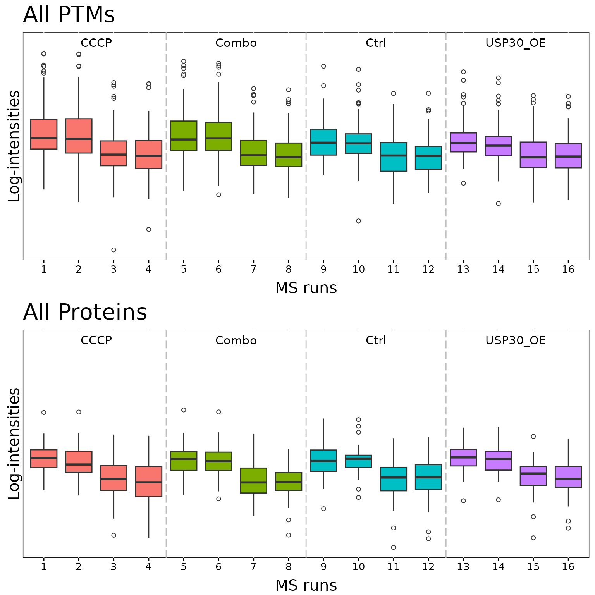
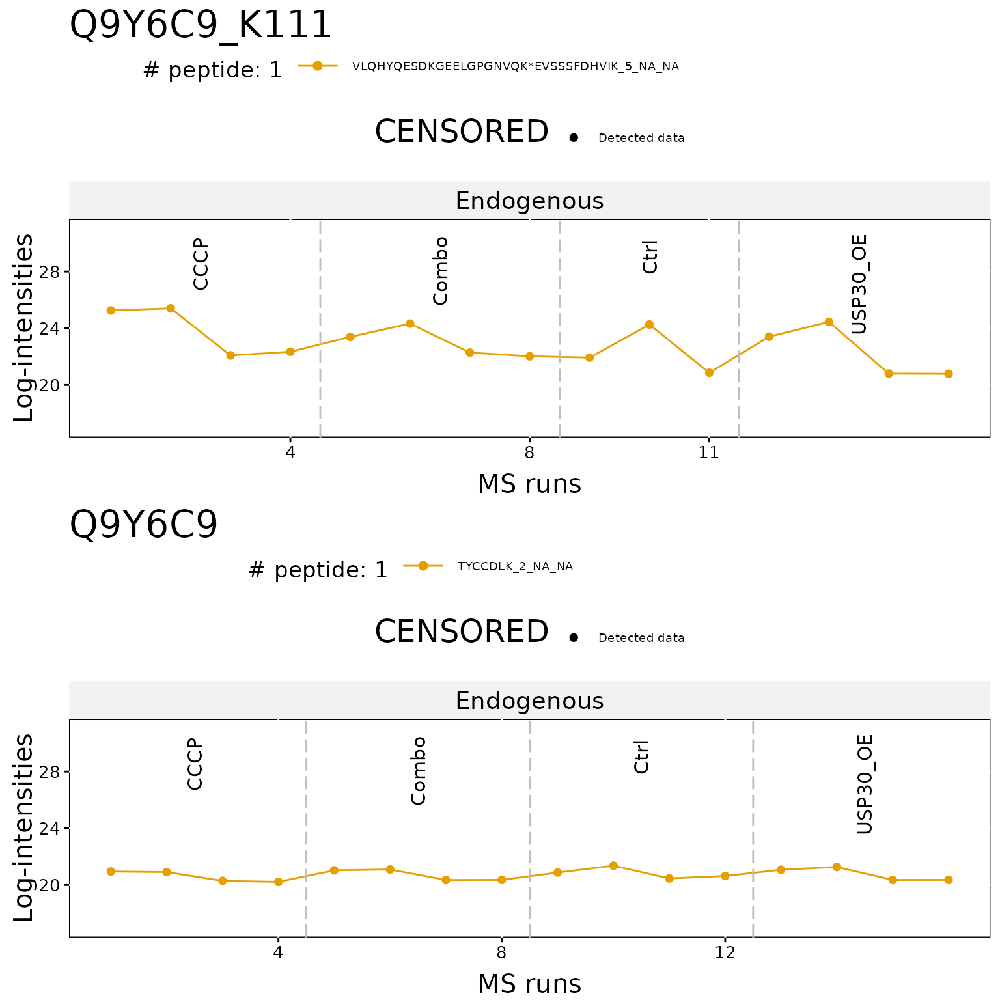
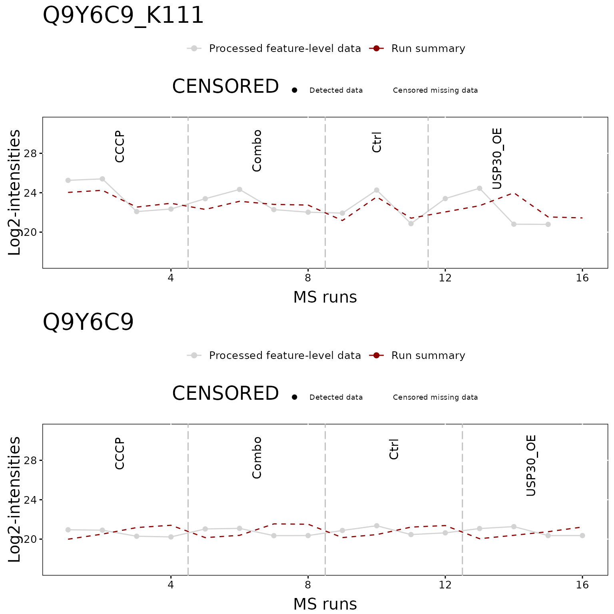
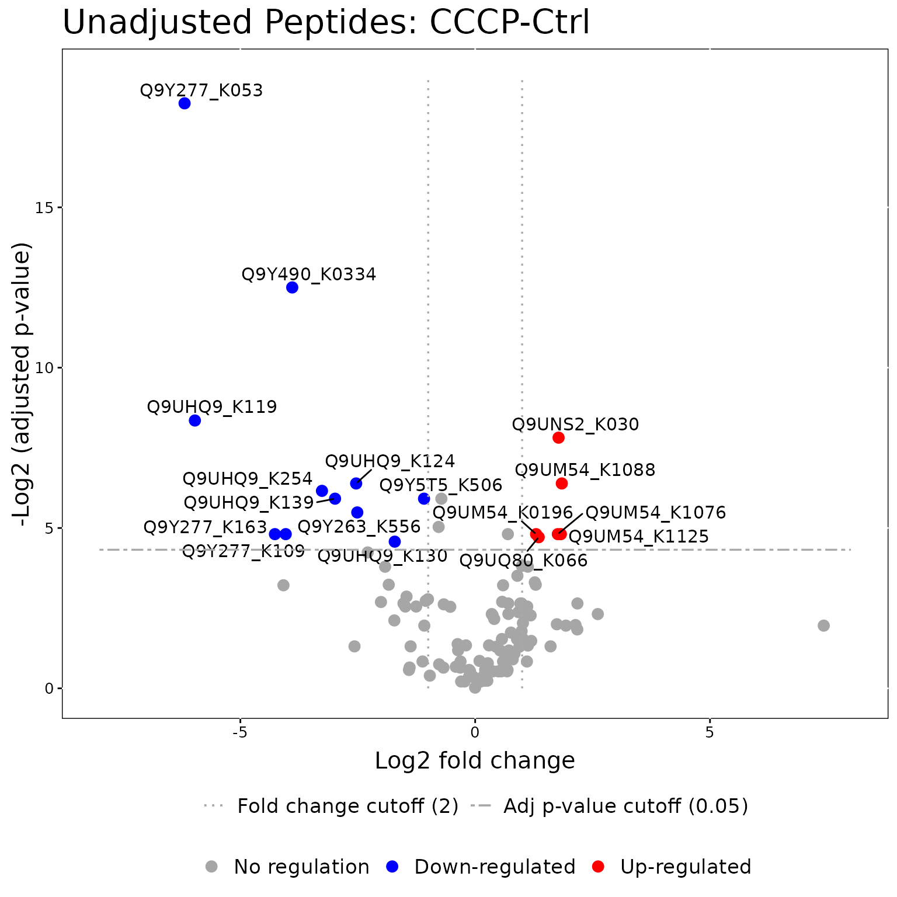
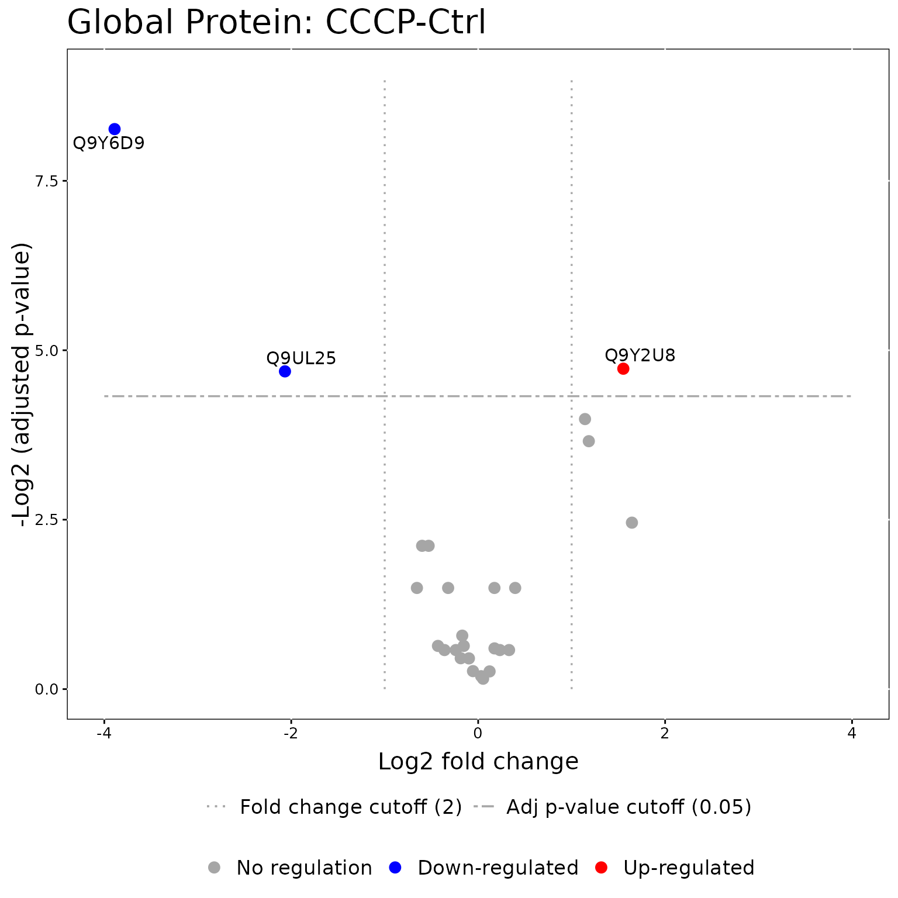
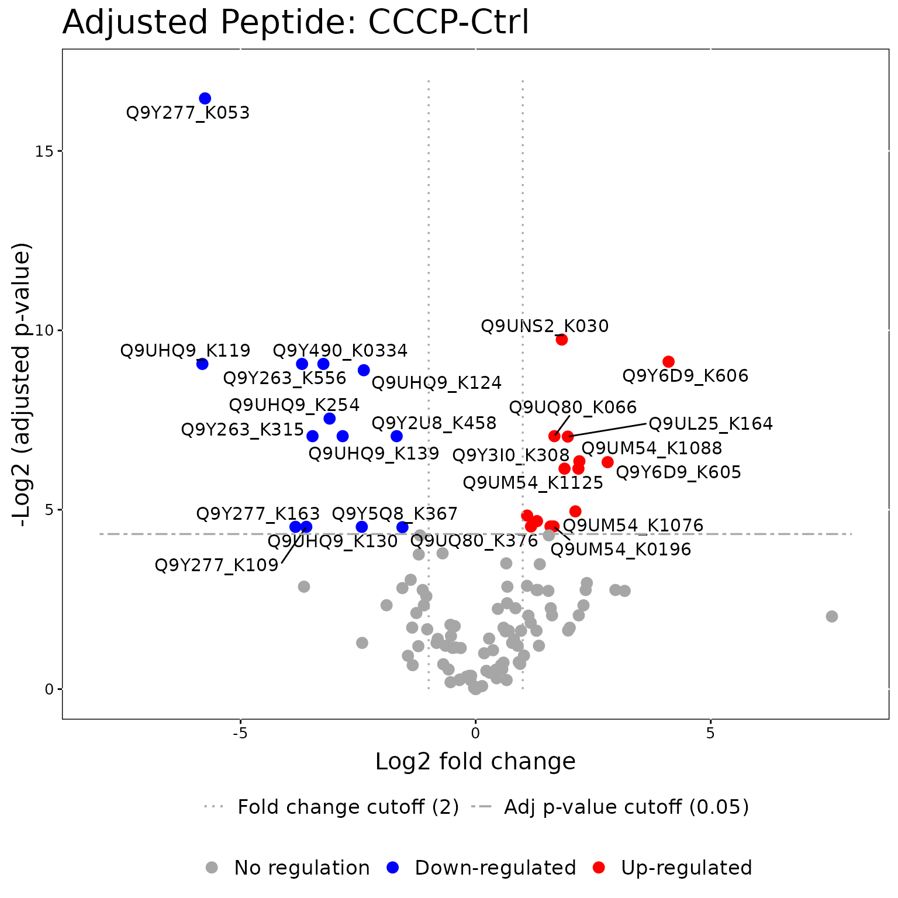
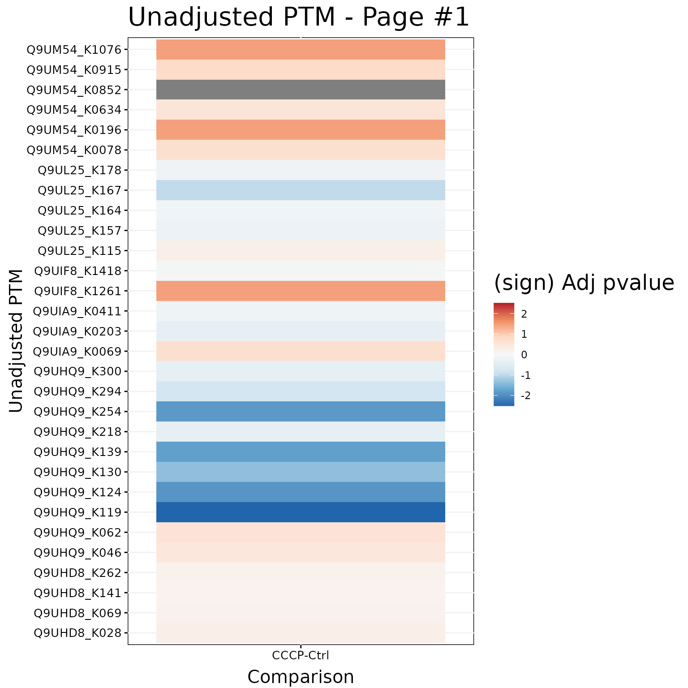
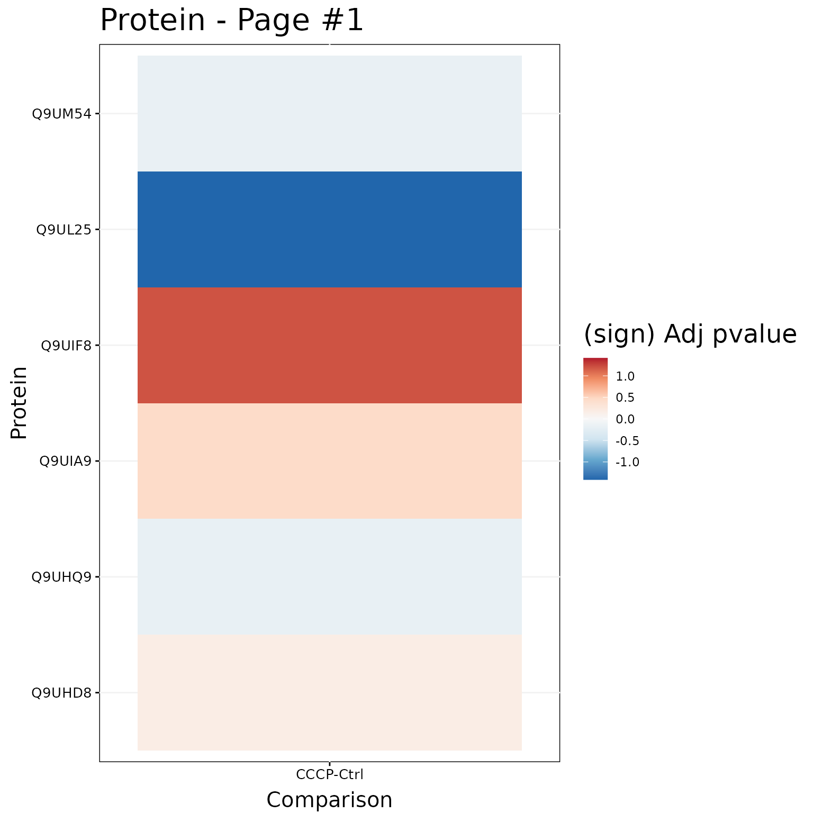
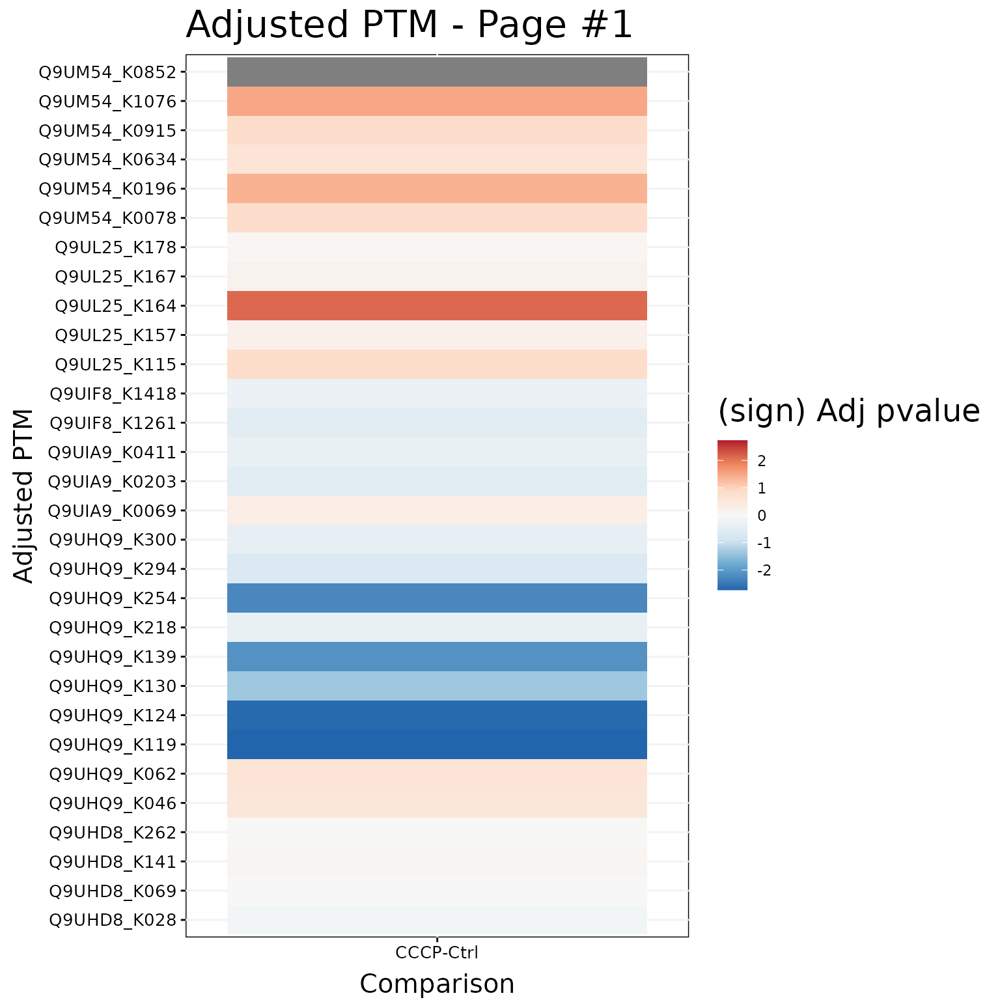

MSstatsPTM LabelFree Workflow
Devon Kohler (kohler.d@northeastern.edu)
2026-04-25
Source:vignettes/MSstatsPTM_LabelFree_Workflow.Rmd
MSstatsPTM_LabelFree_Workflow.RmdThis vignette provides an example workflow for how to use the package
MSstatsPTM for a mass spectrometry based proteomics
experiment acquired with a labelfree acquisition methods, such as
DDA/DIA/SRM/PRM. It also provides examples and an analysis of how
adjusting for global protein levels allows for better interpretations of
PTM modeling results.
Installation
To install this package, start R (version “4.0”) and enter:
if (!requireNamespace("BiocManager", quietly = TRUE))
install.packages("BiocManager")
BiocManager::install("MSstatsPTM")1. Workflow
1.1 Raw Data Format
Note: We are actively developing dedicated converters for
MSstatsPTM. If you have data from a processing tool that
does not have a dedicated converter in MSstatsPTM please add a github
issue https://github.com/Vitek-Lab/MSstatsPTM/issues and we
will add the converter.
The first step is to load in the raw dataset for both the PTM and
Protein datasets. Each dataset can formatted using dedicated converters
in MSstatsPTM, such as
FragePipetoMSstatsPTMFormat. If there is not a dedicated
converter for your tool in MSstatsPTM, you can
alternatively leverage converters from base MSstats. If
using converters from MSstats note they will need to be run
both on the global protein and PTM datasets.
Please note for the PTM dataset, both the protein and modification
site (or peptide), must be added into the ProteinName
column. This allows for the package to summarize to the peptide level,
and avoid the off chance there are matching peptides between proteins.
For an example of how this can be done please see the code below.
The output of the converter is a list with two formatted data.tables.
One each for the PTM and Protein datasets. If a global profiling run was
not performed, the Protein data.table will just be NULL
1.1.1 MaxQuant - MaxQtoMSstatsPTMFormat
MSstatsPTM includes a dedicated converter for MaxQuant
output. Experiments can be acquired with label-free or TMT labeling
methods. No matter the experiment, we recommend using the
evidence.txt file, and not a PTM specific file such as the
Phospho (STY).txt file. The
MaxQtoMSstatsPTMFormat converter includes a variety of
parameters. Examples for processing a TMT and LF dataset can be seen
below.
# TMT experiment
head(maxq_tmt_evidence)
#> Sequence Length Modifications
#> 1 AALLAQYADVTDEEDEADEK 20 Phospho (STY)
#> 2 AALLAQYADVTDEEDEADEK 20 Phospho (STY)
#> 3 AALLAQYADVTDEEDEADEK 20 Phospho (STY)
#> 4 AALLAQYADVTDEEDEADEK 20 Phospho (STY)
#> 5 AALLAQYADVTDEEDEADEK 20 Phospho (STY)
#> 6 AALLAQYADVTDEEDEADEK 20 Phospho (STY)
#> Modified.sequence Oxidation..M..Probabilities
#> 1 _AALLAQYADVT(Phospho (STY))DEEDEADEK_
#> 2 _AALLAQYADVT(Phospho (STY))DEEDEADEK_
#> 3 _AALLAQYADVT(Phospho (STY))DEEDEADEK_
#> 4 _AALLAQYADVT(Phospho (STY))DEEDEADEK_
#> 5 _AALLAQYADVT(Phospho (STY))DEEDEADEK_
#> 6 _AALLAQYADVT(Phospho (STY))DEEDEADEK_
#> Phospho..STY..Probabilities Oxidation..M..Score.Diffs
#> 1 AALLAQYADVT(1)DEEDEADEK
#> 2 AALLAQY(0.316)ADVT(0.684)DEEDEADEK
#> 3 AALLAQYADVT(1)DEEDEADEK
#> 4 AALLAQY(0.001)ADVT(0.999)DEEDEADEK
#> 5 AALLAQY(0.001)ADVT(0.999)DEEDEADEK
#> 6 AALLAQYADVT(1)DEEDEADEK
#> Phospho..STY..Score.Diffs Acetyl..N.term. Oxidation..M. Phospho..STY.
#> 1 AALLAQY(-74)ADVT(74)DEEDEADEK 0 0 1
#> 2 AALLAQY(-3.3)ADVT(3.3)DEEDEADEK 0 0 1
#> 3 AALLAQY(-75)ADVT(75)DEEDEADEK 0 0 1
#> 4 AALLAQY(-29)ADVT(29)DEEDEADEK 0 0 1
#> 5 AALLAQY(-29)ADVT(29)DEEDEADEK 0 0 1
#> 6 AALLAQY(-39)ADVT(39)DEEDEADEK 0 0 1
#> Missed.cleavages Proteins Leading.proteins Leading.razor.protein Gene.names
#> 1 0 Q96MW1 Q96MW1 Q96MW1 CCDC43
#> 2 0 Q96MW1 Q96MW1 Q96MW1 CCDC43
#> 3 0 Q96MW1 Q96MW1 Q96MW1 CCDC43
#> 4 0 Q96MW1 Q96MW1 Q96MW1 CCDC43
#> 5 0 Q96MW1 Q96MW1 Q96MW1 CCDC43
#> 6 0 Q96MW1 Q96MW1 Q96MW1 CCDC43
#> Protein.names Type
#> 1 Coiled-coil domain-containing protein 43 MULTI-MSMS
#> 2 Coiled-coil domain-containing protein 43 MSMS
#> 3 Coiled-coil domain-containing protein 43 MULTI-MSMS
#> 4 Coiled-coil domain-containing protein 43 MULTI-MSMS
#> 5 Coiled-coil domain-containing protein 43 MSMS
#> 6 Coiled-coil domain-containing protein 43 MSMS
#> Raw.file Fraction Experiment MS.MS.m.z
#> 1 20171106_LUMOS1_nLC13_AH_TechBench2_TMTMS2L_1 1 MS2 912.0978
#> 2 20171106_LUMOS1_nLC13_AH_TechBench2_TMTMS2L_1 1 MS2 911.7875
#> 3 20171106_LUMOS1_nLC13_AH_TechBench2_TMTMS2L_2 2 MS2 912.4321
#> 4 20171106_LUMOS1_nLC13_AH_TechBench2_TMTMS2L_2 2 MS2 912.4330
#> 5 20171106_LUMOS1_nLC13_AH_TechBench2_TMTMS2L_2 2 MS2 912.0959
#> 6 20171106_LUMOS1_nLC13_AH_TechBench2_TMTMS2L_2 2 MS2 912.1791
#> Charge m.z Mass Uncalibrated...Calibrated.m.z..ppm.
#> 1 3 759.3212 2274.942 2.5755
#> 2 3 759.3212 2274.942 NaN
#> 3 3 759.3212 2274.942 2.0210
#> 4 3 759.3212 2274.942 2.2832
#> 5 3 759.3212 2274.942 NaN
#> 6 3 759.3212 2274.942 NaN
#> Uncalibrated...Calibrated.m.z..Da. Mass.error..ppm. Mass.error..Da.
#> 1 0.0019556 201200 152.78
#> 2 NaN NaN NaN
#> 3 0.0015346 201200 152.78
#> 4 0.0017337 201200 152.78
#> 5 NaN NaN NaN
#> 6 NaN NaN NaN
#> Uncalibrated.mass.error..ppm. Uncalibrated.mass.error..Da.
#> 1 201200 152.78
#> 2 NaN NaN
#> 3 201200 152.78
#> 4 201200 152.78
#> 5 NaN NaN
#> 6 NaN NaN
#> Max.intensity.m.z.0 Retention.time Retention.length Calibrated.retention.time
#> 1 912.4306 115.23 2.47460 115.23
#> 2 NaN 118.50 1.00000 118.50
#> 3 912.4308 114.72 2.35110 114.72
#> 4 912.4312 116.72 0.53974 116.72
#> 5 NaN 116.50 1.00000 116.50
#> 6 NaN 117.68 1.00000 117.68
#> Calibrated.retention.time.start Calibrated.retention.time.finish
#> 1 114.78 117.25
#> 2 118.00 119.00
#> 3 114.22 116.57
#> 4 116.57 117.11
#> 5 116.00 117.00
#> 6 117.18 118.18
#> Retention.time.calibration Match.time.difference Match.m.z.difference
#> 1 0 NA NA
#> 2 0 NA NA
#> 3 0 NA NA
#> 4 0 NA NA
#> 5 0 NA NA
#> 6 0 NA NA
#> Match.q.value Match.score Number.of.data.points Number.of.scans
#> 1 NA NA 382 108
#> 2 NA NA NA NA
#> 3 NA NA 356 106
#> 4 NA NA 42 23
#> 5 NA NA NA NA
#> 6 NA NA NA NA
#> Number.of.isotopic.peaks PIF Fraction.of.total.spectrum
#> 1 6 0.9277212 0.004005980
#> 2 NA NaN NaN
#> 3 6 0.9841691 0.006051585
#> 4 3 0.7940387 0.001093331
#> 5 NA NaN NaN
#> 6 NA NaN NaN
#> Base.peak.fraction PEP MS.MS.count MS.MS.scan.number Score
#> 1 0.09994941 1.8662e-46 2 38414 189.110
#> 2 NaN 1.6689e-02 1 39380 47.726
#> 3 0.08806564 5.8955e-39 2 38486 176.840
#> 4 0.02217602 5.4630e-08 1 38940 104.880
#> 5 NaN 8.6608e-27 1 38878 127.050
#> 6 NaN 4.8577e-26 1 39319 122.300
#> Delta.score Combinatorics Intensity Reporter.intensity.corrected.1
#> 1 180.010 2 240530000 125940
#> 2 30.847 2 NA 0
#> 3 167.750 2 102250000 155390
#> 4 89.116 2 11613000 69254
#> 5 118.860 2 NA 0
#> 6 114.110 2 NA 0
#> Reporter.intensity.corrected.2 Reporter.intensity.corrected.3
#> 1 133100 113620
#> 2 0 0
#> 3 164220 143320
#> 4 80370 60918
#> 5 0 0
#> 6 0 0
#> Reporter.intensity.corrected.4 Reporter.intensity.corrected.5
#> 1 119420 108710
#> 2 0 0
#> 3 160600 163330
#> 4 75915 67276
#> 5 0 0
#> 6 0 0
#> Reporter.intensity.corrected.6 Reporter.intensity.corrected.7
#> 1 155830 138320
#> 2 0 0
#> 3 205080 184670
#> 4 86921 80510
#> 5 0 0
#> 6 0 0
#> Reporter.intensity.corrected.8 Reporter.intensity.corrected.9
#> 1 158440 174430
#> 2 0 0
#> 3 178690 203130
#> 4 80892 87856
#> 5 0 0
#> 6 0 0
#> Reporter.intensity.corrected.10 Reporter.intensity.1 Reporter.intensity.2
#> 1 130450 125940 133100
#> 2 0 0 0
#> 3 155170 155390 164220
#> 4 82300 69254 80370
#> 5 0 0 0
#> 6 0 0 0
#> Reporter.intensity.3 Reporter.intensity.4 Reporter.intensity.5
#> 1 113620 119420 108710
#> 2 0 0 0
#> 3 143320 160600 163330
#> 4 60918 75915 67276
#> 5 0 0 0
#> 6 0 0 0
#> Reporter.intensity.6 Reporter.intensity.7 Reporter.intensity.8
#> 1 155830 138320 158440
#> 2 0 0 0
#> 3 205080 184670 178690
#> 4 86921 80510 80892
#> 5 0 0 0
#> 6 0 0 0
#> Reporter.intensity.9 Reporter.intensity.10 Reporter.intensity.count.1
#> 1 174430 130450 2
#> 2 0 0 0
#> 3 203130 155170 2
#> 4 87856 82300 1
#> 5 0 0 0
#> 6 0 0 0
#> Reporter.intensity.count.2 Reporter.intensity.count.3
#> 1 2 2
#> 2 0 0
#> 3 2 2
#> 4 1 1
#> 5 0 0
#> 6 0 0
#> Reporter.intensity.count.4 Reporter.intensity.count.5
#> 1 2 2
#> 2 0 0
#> 3 2 2
#> 4 1 1
#> 5 0 0
#> 6 0 0
#> Reporter.intensity.count.6 Reporter.intensity.count.7
#> 1 2 2
#> 2 0 0
#> 3 2 2
#> 4 1 1
#> 5 0 0
#> 6 0 0
#> Reporter.intensity.count.8 Reporter.intensity.count.9
#> 1 2 2
#> 2 0 0
#> 3 2 2
#> 4 1 1
#> 5 0 0
#> 6 0 0
#> Reporter.intensity.count.10 Reverse Potential.contaminant id
#> 1 2 125
#> 2 0 126
#> 3 2 127
#> 4 1 128
#> 5 0 129
#> 6 0 130
#> Protein.group.IDs Peptide.ID Mod..peptide.ID MS.MS.IDs Best.MS.MS
#> 1 2449 42 50 153;154 154
#> 2 2449 42 50 155 155
#> 3 2449 42 50 156;157 157
#> 4 2449 42 50 158 158
#> 5 2449 42 50 159 159
#> 6 2449 42 50 160 160
#> Oxidation..M..site.IDs Phospho..STY..site.IDs Taxonomy.IDs
#> 1 6884 NA
#> 2 6884 NA
#> 3 6884 NA
#> 4 6884 NA
#> 5 6884 NA
#> 6 6884 NA
head(maxq_tmt_annotation)
#> Run Fraction TechRepMixture
#> 1 20171106_LUMOS1_nLC13_AH_TechBench2_TMTMS2L_1 1 1
#> 2 20171106_LUMOS1_nLC13_AH_TechBench2_TMTMS2L_1 1 1
#> 3 20171106_LUMOS1_nLC13_AH_TechBench2_TMTMS2L_1 1 1
#> 4 20171106_LUMOS1_nLC13_AH_TechBench2_TMTMS2L_1 1 1
#> 5 20171106_LUMOS1_nLC13_AH_TechBench2_TMTMS2L_1 1 1
#> 6 20171106_LUMOS1_nLC13_AH_TechBench2_TMTMS2L_1 1 1
#> Channel Condition Mixture BioReplicate
#> 1 channel.10 yeast_01x Mixture1 yeast_01x_1
#> 2 channel.1 yeast_04x Mixture1 yeast_04x_1
#> 3 channel.2 yeast_10x Mixture1 yeast_10x_1
#> 4 channel.3 yeast_01x Mixture1 yeast_01x_2
#> 5 channel.4 yeast_04x Mixture1 yeast_04x_2
#> 6 channel.5 yeast_10x Mixture1 yeast_10x_2
msstats_format_tmt = MaxQtoMSstatsPTMFormat(evidence=maxq_tmt_evidence,
annotation=maxq_tmt_annotation,
fasta=system.file("extdata",
"maxq_tmt_fasta.fasta",
package="MSstatsPTM"),
fasta_protein_name="uniprot_ac",
mod_id="\\(Phospho \\(STY\\)\\)",
use_unmod_peptides=TRUE,
labeling_type = "TMT",
which_proteinid_ptm = "Proteins")
#> INFO [2026-04-25 15:40:50] ** Raw data from MaxQuant imported successfully.
#> INFO [2026-04-25 15:40:50] ** Rows with values of Potentialcontaminant equal to + are removed
#> INFO [2026-04-25 15:40:50] ** Rows with values of Reverse equal to + are removed
#> INFO [2026-04-25 15:40:50] ** Features with all missing measurements across channels within each run are removed.
#> INFO [2026-04-25 15:40:50] ** Using provided annotation.
#> INFO [2026-04-25 15:40:50] ** Run and Channel labels were standardized to remove symbols such as '.' or '%'.
#> INFO [2026-04-25 15:40:50] ** The following options are used:
#> - Features will be defined by the columns: PeptideSequence, PrecursorCharge
#> - Shared peptides will be removed.
#> - Proteins with single feature will not be removed.
#> - Features with less than 3 measurements within each run will be kept.
#> INFO [2026-04-25 15:40:50] ** Features with all missing measurements across channels within each run are removed.
#> INFO [2026-04-25 15:40:50] ** Shared peptides are removed.
#> INFO [2026-04-25 15:40:50] ** Features with all missing measurements across channels within each run are removed.
#> INFO [2026-04-25 15:40:50] ** PSMs have been aggregated to peptide ions.
#> INFO [2026-04-25 15:40:50] ** Run annotation merged with quantification data.
#> INFO [2026-04-25 15:40:50] ** Features with one or two measurements across channels within each run are removed.
#> INFO [2026-04-25 15:40:50] ** Fractionation handled.
#> INFO [2026-04-25 15:40:51] ** Updated quantification data to make balanced design. Missing values are marked by NA
#> INFO [2026-04-25 15:40:51] ** Finished preprocessing. The dataset is ready to be processed by the proteinSummarization function.
head(msstats_format_tmt$PTM)
#> ProteinName PeptideSequence Charge
#> 1 Q96MW1_T139 AALLAQYADVT(Phospho (STY))DEEDEADEK 3
#> 2 Q96MW1_T139 AALLAQYADVT(Phospho (STY))DEEDEADEK 3
#> 3 Q96MW1_T139 AALLAQYADVT(Phospho (STY))DEEDEADEK 3
#> 4 Q96MW1_T139 AALLAQYADVT(Phospho (STY))DEEDEADEK 3
#> 5 Q96MW1_T139 AALLAQYADVT(Phospho (STY))DEEDEADEK 3
#> 6 Q96MW1_T139 AALLAQYADVT(Phospho (STY))DEEDEADEK 3
#> PSM Mixture TechRepMixture
#> 1 AALLAQYADVT(Phospho (STY))DEEDEADEK_3 Mixture1 1
#> 2 AALLAQYADVT(Phospho (STY))DEEDEADEK_3 Mixture1 1
#> 3 AALLAQYADVT(Phospho (STY))DEEDEADEK_3 Mixture1 1
#> 4 AALLAQYADVT(Phospho (STY))DEEDEADEK_3 Mixture1 1
#> 5 AALLAQYADVT(Phospho (STY))DEEDEADEK_3 Mixture1 1
#> 6 AALLAQYADVT(Phospho (STY))DEEDEADEK_3 Mixture1 1
#> Run Channel BioReplicate
#> 1 20171106_LUMOS1_nLC13_AH_TechBench2_TMTMS2L_1 channel1 yeast_04x_1
#> 2 20171106_LUMOS1_nLC13_AH_TechBench2_TMTMS2L_1 channel10 yeast_01x_1
#> 3 20171106_LUMOS1_nLC13_AH_TechBench2_TMTMS2L_1 channel2 yeast_10x_1
#> 4 20171106_LUMOS1_nLC13_AH_TechBench2_TMTMS2L_1 channel3 yeast_01x_2
#> 5 20171106_LUMOS1_nLC13_AH_TechBench2_TMTMS2L_1 channel4 yeast_04x_2
#> 6 20171106_LUMOS1_nLC13_AH_TechBench2_TMTMS2L_1 channel5 yeast_10x_2
#> Condition Intensity
#> 1 yeast_04x 125940
#> 2 yeast_01x 130450
#> 3 yeast_10x 133100
#> 4 yeast_01x 113620
#> 5 yeast_04x 119420
#> 6 yeast_10x 108710
head(msstats_format_tmt$PROTEIN)
#> ProteinName PeptideSequence Charge PSM Mixture
#> 351 P29966 EAGEGGEAEAPAAEGGK 2 EAGEGGEAEAPAAEGGK_2 Mixture1
#> 352 P29966 EAGEGGEAEAPAAEGGK 2 EAGEGGEAEAPAAEGGK_2 Mixture1
#> 353 P29966 EAGEGGEAEAPAAEGGK 2 EAGEGGEAEAPAAEGGK_2 Mixture1
#> 354 P29966 EAGEGGEAEAPAAEGGK 2 EAGEGGEAEAPAAEGGK_2 Mixture1
#> 355 P29966 EAGEGGEAEAPAAEGGK 2 EAGEGGEAEAPAAEGGK_2 Mixture1
#> 356 P29966 EAGEGGEAEAPAAEGGK 2 EAGEGGEAEAPAAEGGK_2 Mixture1
#> TechRepMixture Run Channel
#> 351 1 20171106_LUMOS1_nLC13_AH_TechBench2_TMTMS2L_1 channel1
#> 352 1 20171106_LUMOS1_nLC13_AH_TechBench2_TMTMS2L_1 channel10
#> 353 1 20171106_LUMOS1_nLC13_AH_TechBench2_TMTMS2L_1 channel2
#> 354 1 20171106_LUMOS1_nLC13_AH_TechBench2_TMTMS2L_1 channel3
#> 355 1 20171106_LUMOS1_nLC13_AH_TechBench2_TMTMS2L_1 channel4
#> 356 1 20171106_LUMOS1_nLC13_AH_TechBench2_TMTMS2L_1 channel5
#> BioReplicate Condition Intensity
#> 351 yeast_04x_1 yeast_04x 23384
#> 352 yeast_01x_1 yeast_01x 29612
#> 353 yeast_10x_1 yeast_10x 26450
#> 354 yeast_01x_2 yeast_01x 33341
#> 355 yeast_04x_2 yeast_04x 22335
#> 356 yeast_10x_2 yeast_10x 27212
# LF experiment
head(maxq_lf_evidence)
#> Sequence Length Modifications Modified.sequence
#> 1 AAAAAAALQAK 11 Unmodified _AAAAAAALQAK_
#> 2 AAAAAAALQAK 11 Unmodified _AAAAAAALQAK_
#> 3 AAAAAAALQAK 11 Unmodified _AAAAAAALQAK_
#> 4 AAAAAAALQAK 11 Unmodified _AAAAAAALQAK_
#> 5 AAAAAAALQAK 11 Unmodified _AAAAAAALQAK_
#> 6 AAAAAAALQAK 11 Unmodified _AAAAAAALQAK_
#> Oxidation..M..Probabilities Phospho..STY..Probabilities
#> 1
#> 2
#> 3
#> 4
#> 5
#> 6
#> Oxidation..M..Score.Diffs Phospho..STY..Score.Diffs Acetyl..Protein.N.term.
#> 1 0
#> 2 0
#> 3 0
#> 4 0
#> 5 0
#> 6 0
#> Oxidation..M. Phospho..STY. Missed.cleavages Proteins
#> 1 0 0 0 P36578
#> 2 0 0 0 P36578
#> 3 0 0 0 P36578
#> 4 0 0 0 P36578
#> 5 0 0 0 P36578
#> 6 0 0 0 P36578
#> Leading.proteins
#> 1 sp|P36578|RL4_HUMAN60SribosomalproteinL4OS=Homosapiens(Human)OX=9606GN=RPL4PE=1SV=5
#> 2 sp|P36578|RL4_HUMAN60SribosomalproteinL4OS=Homosapiens(Human)OX=9606GN=RPL4PE=1SV=5
#> 3 sp|P36578|RL4_HUMAN60SribosomalproteinL4OS=Homosapiens(Human)OX=9606GN=RPL4PE=1SV=5
#> 4 sp|P36578|RL4_HUMAN60SribosomalproteinL4OS=Homosapiens(Human)OX=9606GN=RPL4PE=1SV=5
#> 5 sp|P36578|RL4_HUMAN60SribosomalproteinL4OS=Homosapiens(Human)OX=9606GN=RPL4PE=1SV=5
#> 6 sp|P36578|RL4_HUMAN60SribosomalproteinL4OS=Homosapiens(Human)OX=9606GN=RPL4PE=1SV=5
#> Leading.razor.protein
#> 1 sp|P36578|RL4_HUMAN60SribosomalproteinL4OS=Homosapiens(Human)OX=9606GN=RPL4PE=1SV=5
#> 2 sp|P36578|RL4_HUMAN60SribosomalproteinL4OS=Homosapiens(Human)OX=9606GN=RPL4PE=1SV=5
#> 3 sp|P36578|RL4_HUMAN60SribosomalproteinL4OS=Homosapiens(Human)OX=9606GN=RPL4PE=1SV=5
#> 4 sp|P36578|RL4_HUMAN60SribosomalproteinL4OS=Homosapiens(Human)OX=9606GN=RPL4PE=1SV=5
#> 5 sp|P36578|RL4_HUMAN60SribosomalproteinL4OS=Homosapiens(Human)OX=9606GN=RPL4PE=1SV=5
#> 6 sp|P36578|RL4_HUMAN60SribosomalproteinL4OS=Homosapiens(Human)OX=9606GN=RPL4PE=1SV=5
#> Type Raw.file Experiment MS.MS.m.z Charge
#> 1 MULTI-MSMS 20180810_QE3_nLC3_AH_DDA_H100_Y25_01 H100_Y25_01 478.7820 2
#> 2 MULTI-MSMS 20180810_QE3_nLC3_AH_DDA_H100_Y25_03 H100_Y25_03 478.7810 2
#> 3 MULTI-MSMS 20180810_QE3_nLC3_AH_DDA_H100_Y25_04 H100_Y25_04 478.7803 2
#> 4 MULTI-MSMS 20180810_QE3_nLC3_AH_DDA_H100_Y25_05 H100_Y25_05 478.7815 2
#> 5 MULTI-MSMS 20180810_QE3_nLC3_AH_DDA_H100_Y25_06 H100_Y25_06 478.7802 2
#> 6 MULTI-MSMS 20180810_QE3_nLC3_AH_DDA_H100_Y50_01 H100_Y50_01 478.7803 2
#> m.z Mass Uncalibrated...Calibrated.m.z..ppm.
#> 1 478.7798 955.5451 5.0066
#> 2 478.7798 955.5451 2.4819
#> 3 478.7798 955.5451 2.1796
#> 4 478.7798 955.5451 2.2967
#> 5 478.7798 955.5451 2.9534
#> 6 478.7798 955.5451 1.6198
#> Uncalibrated...Calibrated.m.z..Da. Mass.error..ppm. Mass.error..Da.
#> 1 0.00239710 -0.46202 -0.00022120
#> 2 0.00118830 0.76954 0.00036844
#> 3 0.00104350 -0.27332 -0.00013086
#> 4 0.00109960 0.50609 0.00024231
#> 5 0.00141400 -0.77230 -0.00036976
#> 6 0.00077553 -0.92114 -0.00044102
#> Uncalibrated.mass.error..ppm. Uncalibrated.mass.error..Da.
#> 1 4.54460 0.00217590
#> 2 3.25140 0.00155670
#> 3 1.90620 0.00091267
#> 4 2.80280 0.00134190
#> 5 2.18110 0.00104430
#> 6 0.69867 0.00033451
#> Max.intensity.m.z.0 Retention.time Retention.length Calibrated.retention.time
#> 1 478.7797 6.2039 0.079819 6.2039
#> 2 478.7799 6.2822 0.090469 6.2822
#> 3 478.7796 6.2327 0.110390 6.2327
#> 4 478.7799 6.2924 0.090472 6.2924
#> 5 478.7793 6.9938 0.089908 6.9938
#> 6 478.7792 6.1802 0.110780 6.1802
#> Calibrated.retention.time.start Calibrated.retention.time.finish
#> 1 6.1683 6.2481
#> 2 6.2257 6.3162
#> 3 6.1950 6.3054
#> 4 6.2470 6.3375
#> 5 6.9485 7.0384
#> 6 6.1278 6.2385
#> Retention.time.calibration Match.time.difference Match.m.z.difference
#> 1 0 NA NA
#> 2 0 NA NA
#> 3 0 NA NA
#> 4 0 NA NA
#> 5 0 NA NA
#> 6 0 NA NA
#> Match.q.value Match.score Number.of.data.points Number.of.scans
#> 1 NA NA 15 7
#> 2 NA NA 14 8
#> 3 NA NA 19 10
#> 4 NA NA 18 8
#> 5 NA NA 17 8
#> 6 NA NA 17 10
#> Number.of.isotopic.peaks PIF Fraction.of.total.spectrum Base.peak.fraction
#> 1 3 0 0 0
#> 2 3 0 0 0
#> 3 2 0 0 0
#> 4 3 0 0 0
#> 5 3 0 0 0
#> 6 2 0 0 0
#> PEP MS.MS.count MS.MS.scan.number Score Delta.score Combinatorics
#> 1 1.2617e-03 1 4016 78.149 67.201 1
#> 2 8.8997e-05 1 4158 111.170 95.303 1
#> 3 3.4144e-04 1 4087 99.442 84.065 1
#> 4 1.2494e-03 1 4148 76.679 61.302 1
#> 5 6.5027e-05 1 4774 114.890 96.560 1
#> 6 8.7846e-05 1 3994 111.950 96.570 1
#> Intensity Reverse Potential.contaminant id Protein.group.IDs Peptide.ID
#> 1 7589900 0 1276 0
#> 2 11810000 1 1276 0
#> 3 10223000 2 1276 0
#> 4 10733000 3 1276 0
#> 5 17840000 4 1276 0
#> 6 9679200 5 1276 0
#> Mod..peptide.ID MS.MS.IDs Best.MS.MS Oxidation..M..site.IDs
#> 1 0 0 0
#> 2 0 1 1
#> 3 0 2 2
#> 4 0 3 3
#> 5 0 4 4
#> 6 0 5 5
#> Phospho..STY..site.IDs Taxonomy.IDs
#> 1 NA
#> 2 NA
#> 3 NA
#> 4 NA
#> 5 NA
#> 6 NA
head(maxq_lf_annotation)
#> Run Condition BioReplicate
#> 1 20180810_QE3_nLC3_AH_DDA_Yonly_ind_01 H0_Y100 H0_Y100_01
#> 2 20180810_QE3_nLC3_AH_DDA_Yonly_ind_02 H0_Y100 H0_Y100_02
#> 3 20180810_QE3_nLC3_AH_DDA_Yonly_ind_03 H0_Y100 H0_Y100_03
#> 4 20180810_QE3_nLC3_AH_DDA_H100_Y25_01 H100_Y25 H100_Y25_07
#> 5 20180810_QE3_nLC3_AH_DDA_H100_Y25_02 H100_Y25 H100_Y25_08
#> 6 20180810_QE3_nLC3_AH_DDA_H100_Y25_03 H100_Y25 H100_Y25_09
#> Raw.file IsotopeLabelType
#> 1 20180810_QE3_nLC3_AH_DDA_Yonly_ind_01 L
#> 2 20180810_QE3_nLC3_AH_DDA_Yonly_ind_02 L
#> 3 20180810_QE3_nLC3_AH_DDA_Yonly_ind_03 L
#> 4 20180810_QE3_nLC3_AH_DDA_H100_Y25_01 L
#> 5 20180810_QE3_nLC3_AH_DDA_H100_Y25_02 L
#> 6 20180810_QE3_nLC3_AH_DDA_H100_Y25_03 L
msstats_format_lf = MaxQtoMSstatsPTMFormat(evidence=maxq_lf_evidence,
annotation=maxq_lf_annotation,
fasta=system.file("extdata",
"maxq_lf_fasta.fasta",
package="MSstatsPTM"),
fasta_protein_name="uniprot_ac",
mod_id="\\(Phospho \\(STY\\)\\)",
use_unmod_peptides=TRUE,
labeling_type = "LF",
which_proteinid_ptm = "Proteins")
#> INFO [2026-04-25 15:40:51] ** Raw data from MaxQuant imported successfully.
#> INFO [2026-04-25 15:40:51] ** Rows with values of Potentialcontaminant equal to + are removed
#> INFO [2026-04-25 15:40:51] ** Rows with values of Reverse equal to + are removed
#> INFO [2026-04-25 15:40:51] ** Using provided annotation.
#> INFO [2026-04-25 15:40:51] ** Run labels were standardized to remove symbols such as '.' or '%'.
#> INFO [2026-04-25 15:40:51] ** The following options are used:
#> - Features will be defined by the columns: PeptideSequence, PrecursorCharge
#> - Shared peptides will be removed.
#> - Proteins with single feature will not be removed.
#> - Features with less than 3 measurements across runs will be removed.
#> INFO [2026-04-25 15:40:51] ** Features with all missing measurements across runs are removed.
#> INFO [2026-04-25 15:40:51] ** Shared peptides are removed.
#> INFO [2026-04-25 15:40:51] ** Multiple measurements in a feature and a run are summarized by summaryforMultipleRows: max
#> INFO [2026-04-25 15:40:51] ** Features with one or two measurements across runs are removed.
#> INFO [2026-04-25 15:40:51] ** Run annotation merged with quantification data.
#> INFO [2026-04-25 15:40:51] ** Features with one or two measurements across runs are removed.
#> INFO [2026-04-25 15:40:51] ** Fractionation handled.
#> INFO [2026-04-25 15:40:51] ** Updated quantification data to make balanced design. Missing values are marked by NA
#> INFO [2026-04-25 15:40:51] ** Finished preprocessing. The dataset is ready to be processed by the dataProcess function.
head(msstats_format_lf$PTM)
#> ProteinName PeptideSequence PrecursorCharge
#> 34 P09938_S15_S22 AAADALS(Phospho (STY))DLEIKDS(Phospho (STY))K 2
#> 35 P09938_S15_S22 AAADALS(Phospho (STY))DLEIKDS(Phospho (STY))K 2
#> 36 P09938_S15_S22 AAADALS(Phospho (STY))DLEIKDS(Phospho (STY))K 2
#> 37 P09938_S15_S22 AAADALS(Phospho (STY))DLEIKDS(Phospho (STY))K 2
#> 38 P09938_S15_S22 AAADALS(Phospho (STY))DLEIKDS(Phospho (STY))K 2
#> 39 P09938_S15_S22 AAADALS(Phospho (STY))DLEIKDS(Phospho (STY))K 2
#> FragmentIon ProductCharge IsotopeLabelType Condition BioReplicate
#> 34 NA NA L H100_Y100 H100_Y100_19
#> 35 NA NA L H100_Y100 H100_Y100_20
#> 36 NA NA L H100_Y100 H100_Y100_21
#> 37 NA NA L H100_Y100 H100_Y100_22
#> 38 NA NA L H100_Y100 H100_Y100_23
#> 39 NA NA L H100_Y100 H100_Y100_24
#> Run Fraction Intensity
#> 34 20180810_QE3_nLC3_AH_DDA_H100_Y100_01 1 NA
#> 35 20180810_QE3_nLC3_AH_DDA_H100_Y100_02 1 NA
#> 36 20180810_QE3_nLC3_AH_DDA_H100_Y100_03 1 NA
#> 37 20180810_QE3_nLC3_AH_DDA_H100_Y100_04 1 NA
#> 38 20180810_QE3_nLC3_AH_DDA_H100_Y100_05 1 NA
#> 39 20180810_QE3_nLC3_AH_DDA_H100_Y100_06 1 NA
head(msstats_format_lf$PROTEIN)
#> ProteinName PeptideSequence PrecursorCharge FragmentIon ProductCharge
#> 1 P36578 AAAAAAALQAK 2 NA NA
#> 2 P36578 AAAAAAALQAK 2 NA NA
#> 3 P36578 AAAAAAALQAK 2 NA NA
#> 4 P36578 AAAAAAALQAK 2 NA NA
#> 5 P36578 AAAAAAALQAK 2 NA NA
#> 6 P36578 AAAAAAALQAK 2 NA NA
#> IsotopeLabelType Condition BioReplicate Run
#> 1 L H100_Y100 H100_Y100_19 20180810_QE3_nLC3_AH_DDA_H100_Y100_01
#> 2 L H100_Y100 H100_Y100_20 20180810_QE3_nLC3_AH_DDA_H100_Y100_02
#> 3 L H100_Y100 H100_Y100_21 20180810_QE3_nLC3_AH_DDA_H100_Y100_03
#> 4 L H100_Y100 H100_Y100_22 20180810_QE3_nLC3_AH_DDA_H100_Y100_04
#> 5 L H100_Y100 H100_Y100_23 20180810_QE3_nLC3_AH_DDA_H100_Y100_05
#> 6 L H100_Y100 H100_Y100_24 20180810_QE3_nLC3_AH_DDA_H100_Y100_06
#> Fraction Intensity
#> 1 1 13697000
#> 2 1 8738100
#> 3 1 10827000
#> 4 1 9628900
#> 5 1 9485600
#> 6 1 NA1.1.2 FragPipe - FragPipetoMSstatsPTMFormat
MSstatsPTM includes a dedicated converter for FragPipe
output. The input is the msstats.csv and annotation files
automatically generated by FragPipe. FragPipe provides additional info
on the localization of modification sites, and the
FragPipetoMSstatsPTMFormat converter includes localization
options that are not present in other converters.
# TMT example
head(fragpipe_input)
#> Spectrum.Name
#> 1 16CPTAC_CCRCC_P_JHU_20180326_LUMOS_f01.02743.02743.4
#> 2 16CPTAC_CCRCC_P_JHU_20180326_LUMOS_f01.02755.02755.4
#> 3 16CPTAC_CCRCC_P_JHU_20180326_LUMOS_f01.02812.02812.3
#> 4 16CPTAC_CCRCC_P_JHU_20180326_LUMOS_f01.02913.02913.3
#> 5 16CPTAC_CCRCC_P_JHU_20180326_LUMOS_f01.02920.02920.5
#> 6 16CPTAC_CCRCC_P_JHU_20180326_LUMOS_f01.02975.02975.3
#> Spectrum.File Peptide.Sequence
#> 1 16CPTAC_CCRCC_P_JHU_20180326_LUMOS_f01.mzML RRHSHSHSPMSTR
#> 2 16CPTAC_CCRCC_P_JHU_20180326_LUMOS_f01.mzML RHSHSHSPMSTR
#> 3 16CPTAC_CCRCC_P_JHU_20180326_LUMOS_f01.mzML HSHSHSPMSTR
#> 4 16CPTAC_CCRCC_P_JHU_20180326_LUMOS_f01.mzML HTRDSEAQR
#> 5 16CPTAC_CCRCC_P_JHU_20180326_LUMOS_f01.mzML QHREPSEQEHRR
#> 6 16CPTAC_CCRCC_P_JHU_20180326_LUMOS_f01.mzML RRSTSPDHTR
#> Modified.Peptide.Sequence Probability Charge Protein.Start
#> 1 n[230]RRHSHS[167]HS[167]PM[147]STR 0.9953 4 92
#> 2 n[230]RHSHS[167]HS[167]PM[147]STR 0.9962 4 93
#> 3 n[230]HSHS[167]HS[167]PM[147]STR 0.9957 3 94
#> 4 n[230]HTRDS[167]EAQR 0.9778 3 6
#> 5 n[230]QHREPS[167]EQEHRR 0.9979 5 123
#> 6 n[230]RRS[167]T[181]SPDHTR 0.9976 3 636
#> Protein.End Gene Mapped.Genes Protein Protein.ID
#> 1 104 TRA2B sp|P62995|TRA2B_HUMAN P62995
#> 2 104 TRA2B sp|P62995|TRA2B_HUMAN P62995
#> 3 104 TRA2B sp|P62995|TRA2B_HUMAN P62995
#> 4 14 STOM sp|P27105|STOM_HUMAN P27105
#> 5 134 SNIP1 sp|Q8TAD8|SNIP1_HUMAN Q8TAD8
#> 6 645 AKAP17A sp|Q02040|AK17A_HUMAN Q02040
#> Mapped.Proteins Protein.Description Is.Unique Purity Intensity
#> 1 Transformer-2 protein homolog beta true 0.00 0
#> 2 Transformer-2 protein homolog beta true 1.00 93998240
#> 3 Transformer-2 protein homolog beta true 1.00 58713048
#> 4 Stomatin true 0.53 0
#> 5 Smad nuclear-interacting protein 1 true 0.84 32706532
#> 6 A-kinase anchor protein 17A true 1.00 28102432
#> M.15.9949 STY.79.966331
#> 1 RRHSHSHSPM(1.0000)STR RRHS(0.1780)HS(0.8463)HS(0.8392)PMS(0.0709)T(0.0656)R
#> 2 RHSHSHSPM(1.0000)STR RHS(0.1497)HS(0.8741)HS(0.8698)PMS(0.0523)T(0.0542)R
#> 3 HSHSHSPM(1.0000)STR HS(0.0582)HS(0.9325)HS(0.9327)PMS(0.0387)T(0.0380)R
#> 4 HT(0.3995)RDS(0.6005)EAQR
#> 5 QHREPS(1.0000)EQEHRR
#> 6 RRS(0.7370)T(0.7512)S(0.4257)PDHT(0.0862)R
#> Channel.126 Channel.127N Channel.127C Channel.128N Channel.128C Channel.129N
#> 1 5578.652 8280.212 7034.635 10747.431 14872.24 17204.29
#> 2 19045.867 25291.979 38326.629 34385.059 42117.77 72897.84
#> 3 18498.551 24321.078 33518.191 31881.815 36766.03 60230.07
#> 4 13825.080 15933.881 8398.121 8001.169 12493.29 22851.57
#> 5 13345.636 24715.256 11790.443 18234.275 34780.09 12546.47
#> 6 15176.378 8430.135 14684.991 19511.988 38792.40 58184.98
#> Channel.129C Channel.130N Channel.130C Channel.131N
#> 1 15443.60 11442.942 12985.56 11235.75
#> 2 33277.25 50290.703 49428.89 26749.50
#> 3 31366.80 41944.098 47435.18 20533.39
#> 4 11001.78 8394.632 10014.59 14173.92
#> 5 29433.08 18376.287 14489.56 16896.90
#> 6 26905.22 26273.547 24920.71 15653.74
head(fragpipe_annotation)
#> Run Fraction TechRepMixture Mixture
#> 1 16CPTAC_CCRCC_P_JHU_20180326_LUMOS_f01 1 1 plex16
#> 2 16CPTAC_CCRCC_P_JHU_20180326_LUMOS_f02 2 1 plex16
#> 3 16CPTAC_CCRCC_P_JHU_20180326_LUMOS_f03 3 1 plex16
#> 4 16CPTAC_CCRCC_P_JHU_20180326_LUMOS_f01 1 1 plex16
#> 5 16CPTAC_CCRCC_P_JHU_20180326_LUMOS_f02 2 1 plex16
#> 6 16CPTAC_CCRCC_P_JHU_20180326_LUMOS_f03 3 1 plex16
#> Channel BioReplicate Condition
#> 1 126 CPT0088900003_T T
#> 2 126 CPT0088900003_T T
#> 3 126 CPT0088900003_T T
#> 4 127N CPT0079270003_T T
#> 5 127N CPT0079270003_T T
#> 6 127N CPT0079270003_T T
head(fragpipe_input_protein)
#> Spectrum.Name
#> 1 16CPTAC_CCRCC_W_JHU_20180322_LUMOS_f01.03785.03785.3
#> 2 16CPTAC_CCRCC_W_JHU_20180322_LUMOS_f01.04553.04553.3
#> 3 16CPTAC_CCRCC_W_JHU_20180322_LUMOS_f01.05163.05163.3
#> 4 16CPTAC_CCRCC_W_JHU_20180322_LUMOS_f01.05368.05368.2
#> 5 16CPTAC_CCRCC_W_JHU_20180322_LUMOS_f01.06388.06388.3
#> 6 16CPTAC_CCRCC_W_JHU_20180322_LUMOS_f01.09515.09515.2
#> Spectrum.File Peptide.Sequence
#> 1 16CPTAC_CCRCC_W_JHU_20180322_LUMOS_f01.mzML ANGMELDGRR
#> 2 16CPTAC_CCRCC_W_JHU_20180322_LUMOS_f01.mzML EEMDDQDK
#> 3 16CPTAC_CCRCC_W_JHU_20180322_LUMOS_f01.mzML ANGMELDGRR
#> 4 16CPTAC_CCRCC_W_JHU_20180322_LUMOS_f01.mzML EYEQDQSSSR
#> 5 16CPTAC_CCRCC_W_JHU_20180322_LUMOS_f01.mzML DRDTQNLQAQEEER
#> 6 16CPTAC_CCRCC_W_JHU_20180322_LUMOS_f01.mzML EEMDDQDK
#> Modified.Peptide.Sequence Probability Charge Protein.Start Protein.End Gene
#> 1 ANGM[147]ELDGRR 0.8947 3 180 189 TRA2A
#> 2 n[230]EEM[147]DDQDK 0.8677 3 428 435 THRAP3
#> 3 0.9888 3 180 189 TRA2A
#> 4 n[230]EYEQDQSSSR 1.0000 2 435 444 ZC3H13
#> 5 n[230]DRDTQNLQAQEEER 1.0000 3 166 179 SNIP1
#> 6 n[230]EEMDDQDK 1.0000 2 428 435 THRAP3
#> Mapped.Genes Protein Protein.ID Mapped.Proteins
#> 1 TRA2B sp|Q13595|TRA2A_HUMAN Q13595 sp|P62995|TRA2B_HUMAN
#> 2 sp|Q9Y2W1|TR150_HUMAN Q9Y2W1
#> 3 TRA2B sp|Q13595|TRA2A_HUMAN Q13595 sp|P62995|TRA2B_HUMAN
#> 4 sp|Q5T200|ZC3HD_HUMAN Q5T200
#> 5 sp|Q8TAD8|SNIP1_HUMAN Q8TAD8
#> 6 sp|Q9Y2W1|TR150_HUMAN Q9Y2W1
#> Protein.Description Is.Unique Purity Intensity
#> 1 Transformer-2 protein homolog alpha false 0.66 11404057
#> 2 Thyroid hormone receptor-associated protein 3 true 1.00 214722976
#> 3 Transformer-2 protein homolog alpha false 1.00 0
#> 4 Zinc finger CCCH domain-containing protein 13 true 1.00 0
#> 5 Smad nuclear-interacting protein 1 true 1.00 23654240
#> 6 Thyroid hormone receptor-associated protein 3 true 1.00 137334144
#> Channel.126 Channel.127N Channel.127C Channel.128N Channel.128C Channel.129N
#> 1 0.00 0.00 0.00 0.00 0.00 0.00
#> 2 169649.80 128647.68 211484.62 217940.97 285032.38 386665.06
#> 3 0.00 0.00 0.00 0.00 0.00 0.00
#> 4 27110.14 27206.84 18804.96 31722.93 46041.87 56579.66
#> 5 34456.11 45179.79 32160.84 45215.09 75652.51 31730.62
#> 6 540481.56 393964.88 647020.00 672371.25 932212.88 1208951.00
#> Channel.129C Channel.130N Channel.130C Channel.131N
#> 1 0.00 0.00 0.00 0.00
#> 2 214397.91 235756.58 217907.38 128019.87
#> 3 0.00 0.00 0.00 0.00
#> 4 37022.87 38246.96 35628.89 29679.23
#> 5 46960.10 51399.19 38244.52 36727.02
#> 6 665127.81 719719.12 749849.31 429616.81
head(fragpipe_annotation_protein)
#> Run Fraction TechRepMixture Mixture
#> 1 16CPTAC_CCRCC_W_JHU_20180322_LUMOS_f01 1 1 plex16
#> 2 16CPTAC_CCRCC_W_JHU_20180322_LUMOS_f02 2 1 plex16
#> 3 16CPTAC_CCRCC_W_JHU_20180322_LUMOS_f03 3 1 plex16
#> 4 16CPTAC_CCRCC_W_JHU_20180322_LUMOS_f01 1 1 plex16
#> 5 16CPTAC_CCRCC_W_JHU_20180322_LUMOS_f02 2 1 plex16
#> 6 16CPTAC_CCRCC_W_JHU_20180322_LUMOS_f03 3 1 plex16
#> Channel BioReplicate Condition
#> 1 126 CPT0088900003_T T
#> 2 126 CPT0088900003_T T
#> 3 126 CPT0088900003_T T
#> 4 127N CPT0079270003_T T
#> 5 127N CPT0079270003_T T
#> 6 127N CPT0079270003_T T
msstats_data = FragPipetoMSstatsPTMFormat(fragpipe_input,
fragpipe_annotation,
fragpipe_input_protein,
fragpipe_annotation_protein,
mod_id_col = "STY",
localization_cutoff=.75,
remove_unlocalized_peptides=TRUE)
#> INFO [2026-04-25 15:40:51] ** Raw data from Philosopher imported successfully.
#> INFO [2026-04-25 15:40:51] ** Using provided annotation.
#> INFO [2026-04-25 15:40:51] ** Run and Channel labels were standardized to remove symbols such as '.' or '%'.
#> INFO [2026-04-25 15:40:51] ** The following options are used:
#> - Features will be defined by the columns: PeptideSequence, PrecursorCharge
#> - Shared peptides will be removed.
#> - Proteins with single feature will not be removed.
#> - Features with less than 3 measurements within each run will be kept.
#> INFO [2026-04-25 15:40:51] ** Rows with values not greater than 0.6 in Purity are removed
#> WARN [2026-04-25 15:40:51] ** PeptideProphetProbability not found in input columns.
#> INFO [2026-04-25 15:40:51] ** Sequences containing Oxidation are removed.
#> INFO [2026-04-25 15:40:51] ** Features with all missing measurements across channels within each run are removed.
#> INFO [2026-04-25 15:40:51] ** Shared peptides are removed.
#> INFO [2026-04-25 15:40:51] ** Features with all missing measurements across channels within each run are removed.
#> INFO [2026-04-25 15:40:51] ** PSMs have been aggregated to peptide ions.
#> INFO [2026-04-25 15:40:51] ** Run annotation merged with quantification data.
#> INFO [2026-04-25 15:40:51] ** Features with one or two measurements across channels within each run are removed.
#> INFO [2026-04-25 15:40:51] ** Fractionation handled.
#> INFO [2026-04-25 15:40:51] ** Updated quantification data to make balanced design. Missing values are marked by NA
#> INFO [2026-04-25 15:40:51] ** Finished preprocessing. The dataset is ready to be processed by the proteinSummarization function.
#> INFO [2026-04-25 15:40:51] ** Raw data from Philosopher imported successfully.
#> INFO [2026-04-25 15:40:51] ** Using provided annotation.
#> INFO [2026-04-25 15:40:51] ** Run and Channel labels were standardized to remove symbols such as '.' or '%'.
#> INFO [2026-04-25 15:40:51] ** The following options are used:
#> - Features will be defined by the columns: PeptideSequence, PrecursorCharge
#> - Shared peptides will be removed.
#> - Proteins with single feature will not be removed.
#> - Features with less than 3 measurements within each run will be kept.
#> INFO [2026-04-25 15:40:51] ** Rows with values not greater than 0.6 in Purity are removed
#> WARN [2026-04-25 15:40:51] ** PeptideProphetProbability not found in input columns.
#> INFO [2026-04-25 15:40:51] ** Sequences containing Oxidation are removed.
#> INFO [2026-04-25 15:40:51] ** Features with all missing measurements across channels within each run are removed.
#> INFO [2026-04-25 15:40:51] ** Shared peptides are removed.
#> INFO [2026-04-25 15:40:51] ** Features with all missing measurements across channels within each run are removed.
#> INFO [2026-04-25 15:40:51] ** PSMs have been aggregated to peptide ions.
#> INFO [2026-04-25 15:40:51] ** Run annotation merged with quantification data.
#> INFO [2026-04-25 15:40:51] ** Features with one or two measurements across channels within each run are removed.
#> INFO [2026-04-25 15:40:51] ** Fractionation handled.
#> INFO [2026-04-25 15:40:51] ** Updated quantification data to make balanced design. Missing values are marked by NA
#> INFO [2026-04-25 15:40:51] ** Finished preprocessing. The dataset is ready to be processed by the proteinSummarization function.
head(msstats_data$PTM)
#> ProteinName PeptideSequence Charge
#> 1 sp|Q9Y2W1|TR150_HUMAN_S805 AEEYTEETEEREES*TTGFDK 3
#> 2 sp|Q9Y2W1|TR150_HUMAN_S805 AEEYTEETEEREES*TTGFDK 3
#> 3 sp|Q9Y2W1|TR150_HUMAN_S805 AEEYTEETEEREES*TTGFDK 3
#> 4 sp|Q9Y2W1|TR150_HUMAN_S805 AEEYTEETEEREES*TTGFDK 3
#> 5 sp|Q9Y2W1|TR150_HUMAN_S805 AEEYTEETEEREES*TTGFDK 3
#> 6 sp|Q9Y2W1|TR150_HUMAN_S805 AEEYTEETEEREES*TTGFDK 3
#> PSM Mixture TechRepMixture
#> 1 AEEYTEETEEREES*TTGFDK_3 plex16 1
#> 2 AEEYTEETEEREES*TTGFDK_3 plex16 1
#> 3 AEEYTEETEEREES*TTGFDK_3 plex16 1
#> 4 AEEYTEETEEREES*TTGFDK_3 plex16 1
#> 5 AEEYTEETEEREES*TTGFDK_3 plex16 1
#> 6 AEEYTEETEEREES*TTGFDK_3 plex16 1
#> Run Channel BioReplicate Condition
#> 1 16CPTAC_CCRCC_P_JHU_20180326_LUMOS_f01 126 CPT0088900003_T T
#> 2 16CPTAC_CCRCC_P_JHU_20180326_LUMOS_f01 127C CPT0088920001_N N
#> 3 16CPTAC_CCRCC_P_JHU_20180326_LUMOS_f01 127N CPT0079270003_T T
#> 4 16CPTAC_CCRCC_P_JHU_20180326_LUMOS_f01 128C CPT0088550004_T T
#> 5 16CPTAC_CCRCC_P_JHU_20180326_LUMOS_f01 128N CPT0079300001_N N
#> 6 16CPTAC_CCRCC_P_JHU_20180326_LUMOS_f01 129C CPT0014450004_T T
#> Intensity
#> 1 47545.47
#> 2 45316.41
#> 3 80388.11
#> 4 66856.88
#> 5 118057.66
#> 6 192263.72
head(msstats_data$PROTEIN)
#> ProteinName PeptideSequence Charge PSM
#> 1 sp|Q9Y2W1|TR150_HUMAN AEEYTEETEEREESTTGFDK 3 AEEYTEETEEREESTTGFDK_3
#> 2 sp|Q9Y2W1|TR150_HUMAN AEEYTEETEEREESTTGFDK 3 AEEYTEETEEREESTTGFDK_3
#> 3 sp|Q9Y2W1|TR150_HUMAN AEEYTEETEEREESTTGFDK 3 AEEYTEETEEREESTTGFDK_3
#> 4 sp|Q9Y2W1|TR150_HUMAN AEEYTEETEEREESTTGFDK 3 AEEYTEETEEREESTTGFDK_3
#> 5 sp|Q9Y2W1|TR150_HUMAN AEEYTEETEEREESTTGFDK 3 AEEYTEETEEREESTTGFDK_3
#> 6 sp|Q9Y2W1|TR150_HUMAN AEEYTEETEEREESTTGFDK 3 AEEYTEETEEREESTTGFDK_3
#> Mixture TechRepMixture Run Channel
#> 1 plex16 1 16CPTAC_CCRCC_W_JHU_20180322_LUMOS_f01 126
#> 2 plex16 1 16CPTAC_CCRCC_W_JHU_20180322_LUMOS_f01 127C
#> 3 plex16 1 16CPTAC_CCRCC_W_JHU_20180322_LUMOS_f01 127N
#> 4 plex16 1 16CPTAC_CCRCC_W_JHU_20180322_LUMOS_f01 128C
#> 5 plex16 1 16CPTAC_CCRCC_W_JHU_20180322_LUMOS_f01 128N
#> 6 plex16 1 16CPTAC_CCRCC_W_JHU_20180322_LUMOS_f01 129C
#> BioReplicate Condition Intensity
#> 1 CPT0088900003_T T 97711.92
#> 2 CPT0088920001_N N 104208.69
#> 3 CPT0079270003_T T 107628.15
#> 4 CPT0088550004_T T 194282.36
#> 5 CPT0079300001_N N 152762.88
#> 6 CPT0014450004_T T 143260.84
# LFQ Example
input = system.file("tinytest/raw_data/Fragpipe/MSstats.csv",
package = "MSstatsPTM")
input = data.table::fread(input)
annot = system.file("tinytest/raw_data/Fragpipe/experiment_annotation.tsv",
package = "MSstatsPTM")
annot = data.table::fread(annot)
input_protein = system.file("tinytest/raw_data/Fragpipe/msstats_proteome_lf.csv",
package = "MSstatsPTM")
input_protein = data.table::fread(input_protein) # Global profiling run
msstats_data = FragPipetoMSstatsPTMFormat(input,
annot,
input_protein = input_protein,
label_type="LF",
mod_id_col = "STY",
localization_cutoff=.75,
protein_id_col = "ProteinName",
peptide_id_col = "PeptideSequence")
#> INFO [2026-04-25 15:40:51] ** Raw data from FragPipe imported successfully.
#> INFO [2026-04-25 15:40:51] ** Using annotation extracted from quantification data.
#> INFO [2026-04-25 15:40:51] ** Run labels were standardized to remove symbols such as '.' or '%'.
#> INFO [2026-04-25 15:40:51] ** The following options are used:
#> - Features will be defined by the columns: PeptideSequence, PrecursorCharge, FragmentIon, ProductCharge
#> - Shared peptides will be removed.
#> - Proteins with single feature will not be removed.
#> - Features with less than 3 measurements across runs will be kept.
#> INFO [2026-04-25 15:40:51] ** Features with all missing measurements across runs are removed.
#> INFO [2026-04-25 15:40:51] ** Shared peptides are removed.
#> INFO [2026-04-25 15:40:51] ** Multiple measurements in a feature and a run are summarized by summaryforMultipleRows: sum
#> INFO [2026-04-25 15:40:51] ** Features with all missing measurements across runs are removed.
#> INFO [2026-04-25 15:40:51] ** Run annotation merged with quantification data.
#> INFO [2026-04-25 15:40:51] ** Features with all missing measurements across runs are removed.
#> INFO [2026-04-25 15:40:51] ** Fractionation handled.
#> INFO [2026-04-25 15:40:51] ** Updated quantification data to make balanced design. Missing values are marked by NA
#> INFO [2026-04-25 15:40:51] ** Finished preprocessing. The dataset is ready to be processed by the dataProcess function.
#> INFO [2026-04-25 15:40:51] ** Raw data from FragPipe imported successfully.
#> INFO [2026-04-25 15:40:51] ** Using annotation extracted from quantification data.
#> INFO [2026-04-25 15:40:51] ** Run labels were standardized to remove symbols such as '.' or '%'.
#> INFO [2026-04-25 15:40:51] ** The following options are used:
#> - Features will be defined by the columns: PeptideSequence, PrecursorCharge, FragmentIon, ProductCharge
#> - Shared peptides will be removed.
#> - Proteins with single feature will not be removed.
#> - Features with less than 3 measurements across runs will be kept.
#> INFO [2026-04-25 15:40:51] ** Features with all missing measurements across runs are removed.
#> INFO [2026-04-25 15:40:51] ** Shared peptides are removed.
#> INFO [2026-04-25 15:40:51] ** Multiple measurements in a feature and a run are summarized by summaryforMultipleRows: sum
#> INFO [2026-04-25 15:40:51] ** Features with all missing measurements across runs are removed.
#> INFO [2026-04-25 15:40:51] ** Run annotation merged with quantification data.
#> INFO [2026-04-25 15:40:51] ** Features with all missing measurements across runs are removed.
#> INFO [2026-04-25 15:40:51] ** Fractionation handled.
#> INFO [2026-04-25 15:40:51] ** Updated quantification data to make balanced design. Missing values are marked by NA
#> INFO [2026-04-25 15:40:51] ** Finished preprocessing. The dataset is ready to be processed by the dataProcess function.
head(msstats_data$PTM)
#> ProteinName PeptideSequence
#> 1 sp|P02400|RLA4_YEAST_S100 FATVPTGGASSAAAGAAGAAAGGDAAEEEKEEEAKEES*DDDMGFGLFD
#> 2 sp|P02400|RLA4_YEAST_S100 FATVPTGGASSAAAGAAGAAAGGDAAEEEKEEEAKEES*DDDMGFGLFD
#> 3 sp|P02400|RLA4_YEAST_S100 FATVPTGGASSAAAGAAGAAAGGDAAEEEKEEEAKEES*DDDMGFGLFD
#> 4 sp|P02400|RLA4_YEAST_S100 FATVPTGGASSAAAGAAGAAAGGDAAEEEKEEEAKEES*DDDMGFGLFD
#> 5 sp|P02400|RLA4_YEAST_S100 FATVPTGGASSAAAGAAGAAAGGDAAEEEKEEEAKEES*DDDMGFGLFD
#> 6 sp|P02400|RLA4_YEAST_S100 FATVPTGGASSAAAGAAGAAAGGDAAEEEKEEEAKEES*DDDMGFGLFD
#> PrecursorCharge FragmentIon ProductCharge IsotopeLabelType Condition
#> 1 3 <NA> NA L WT
#> 2 3 <NA> NA L MUT
#> 3 3 <NA> NA L WT
#> 4 3 <NA> NA L MUT
#> 5 4 <NA> NA L WT
#> 6 4 <NA> NA L MUT
#> BioReplicate Run Fraction Intensity
#> 1 3 JCI-TiO2-DDAphosMethod-WT_1338 1 143712.34
#> 2 2 JCI-TiO2-DDAphosMethod-rho_1339 1 NA
#> 3 4 JCI-TiO2-DDAstd-WT_1335 1 128482.80
#> 4 3 JCI-TiO2-DDAstd-rho_1336 1 NA
#> 5 3 JCI-TiO2-DDAphosMethod-WT_1338 1 64697.76
#> 6 2 JCI-TiO2-DDAphosMethod-rho_1339 1 27288.38
head(msstats_data$PROTEIN)
#> ProteinName PeptideSequence
#> 1 sp|P02400|RLA4_YEAST FATVPTGGASSAAAGAAGAAAGGDAAEEEKEEEAKEESDDDMGFGLFD
#> 2 sp|P02400|RLA4_YEAST FATVPTGGASSAAAGAAGAAAGGDAAEEEKEEEAKEESDDDMGFGLFD
#> 3 sp|P02400|RLA4_YEAST FATVPTGGASSAAAGAAGAAAGGDAAEEEKEEEAKEESDDDMGFGLFD
#> 4 sp|P02400|RLA4_YEAST FATVPTGGASSAAAGAAGAAAGGDAAEEEKEEEAKEESDDDMGFGLFD
#> 5 sp|P02400|RLA4_YEAST FATVPTGGASSAAAGAAGAAAGGDAAEEEKEEEAKEESDDDMGFGLFD
#> 6 sp|P02400|RLA4_YEAST FATVPTGGASSAAAGAAGAAAGGDAAEEEKEEEAKEESDDDMGFGLFD
#> PrecursorCharge FragmentIon ProductCharge IsotopeLabelType Condition
#> 1 3 <NA> NA L WT
#> 2 3 <NA> NA L WT
#> 3 3 <NA> NA L MUT
#> 4 3 <NA> NA L WT
#> 5 3 <NA> NA L MUT
#> 6 3 <NA> NA L WT
#> BioReplicate Run Fraction Intensity
#> 1 1 3-9-2023_JCI_230308_DDA_TiO2-10L_S1-A5_199 1 0.0
#> 2 2 CR_Tio2-WT_1715 1 0.0
#> 3 1 CR_Tio2-phos85D_1716 1 0.0
#> 4 3 JCI-TiO2-DDAphosMethod-WT_1338 1 213712.3
#> 5 2 JCI-TiO2-DDAphosMethod-rho_1339 1 141983.5
#> 6 4 JCI-TiO2-DDAstd-WT_1335 1 235076.71.1.3 Proteome Discoverer - PDtoMSstatsPTMFormat
MSstatsPTM includes a dedicated converter for Proteome
Discoverer output. Experiments can be acquired with label-free or TMT
labeling methods. The input is the psm file and a custom
built annotation file. Proteome Discoverer provides additional info on
the localization of modification sites, and the
PDtoMSstatsPTMFormat converter includes localization
options that are not present in other converters.
head(pd_psm_input)
#> Checked Tags Confidence Identifying.Node.Type Identifying.Node Search.ID
#> 1 False NA High Sequest HT Sequest HT (B4) B
#> 2 False NA High Sequest HT Sequest HT (B4) B
#> 3 False NA High Sequest HT Sequest HT (B4) B
#> 4 False NA High Sequest HT Sequest HT (B4) B
#> 5 False NA High Sequest HT Sequest HT (B4) B
#> 6 False NA High Sequest HT Sequest HT (B4) B
#> Identifying.Node.No PSM.Ambiguity Sequence
#> 1 4 Unambiguous AAEAGETGAATSATEGDNNNNTAAGDKK
#> 2 4 Unambiguous LEAGLSDSK
#> 3 4 Unambiguous LQETNPEEVPK
#> 4 4 Unambiguous LREENFSSNTSELGNKK
#> 5 4 Unambiguous LLDNTNTDVK
#> 6 4 Selected HSDSYSENETNHTNVPISSTGGTNNK
#> Annotated.Sequence Modifications X..Proteins
#> 1 [K].AAEAGETGAATSATEGDNNNNTAAGDKK.[G] 1
#> 2 [K].LEAGLsDSK.[Q] S6(Phospho) 1
#> 3 [K].LQETNPEEVPK.[F] 1
#> 4 [K].LREENFSSNtSELGNKK.[H] T10(Phospho) 1
#> 5 [K].LLDNTNTDVK.[I] 1
#> 6 [R].HSDSYsENETNHTNVPISSTGGTNNK.[T] S6(Phospho) 20
#> Master.Protein.Accessions
#> 1 Q07478
#> 2 P17536
#> 3 P35691
#> 4 P33419
#> 5 Q08421
#> 6 Q99231
#> Master.Protein.Descriptions
#> 1 ATP-dependent RNA helicase SUB2 OS=Saccharomyces cerevisiae (strain ATCC 204508 / S288c) OX=559292 GN=SUB2 PE=1 SV=1
#> 2 Tropomyosin-1 OS=Saccharomyces cerevisiae (strain ATCC 204508 / S288c) OX=559292 GN=TPM1 PE=1 SV=1
#> 3 Translationally-controlled tumor protein homolog OS=Saccharomyces cerevisiae (strain ATCC 204508 / S288c) OX=559292 GN=TMA19 PE=1 SV=1
#> 4 Spindle pole component 29 OS=Saccharomyces cerevisiae (strain ATCC 204508 / S288c) OX=559292 GN=SPC29 PE=1 SV=1
#> 5 Enhancer of translation termination 1 OS=Saccharomyces cerevisiae (strain ATCC 204508 / S288c) OX=559292 GN=ETT1 PE=1 SV=1
#> 6 Transposon Ty1-DR3 Gag-Pol polyprotein OS=Saccharomyces cerevisiae (strain ATCC 204508 / S288c) OX=559292 GN=TY1B-DR3 PE=1 SV=2
#> Protein.Accessions
#> 1 Q07478
#> 2 P17536
#> 3 P35691
#> 4 P33419
#> 5 Q08421
#> 6 P0C2I9; P47100; Q12141; P47098; P0C2J0; P0C2I3; Q12269; Q03855; P0C2I2; Q99231; Q12414; Q07793; Q04711; Q04670; Q12273; Q03612; Q92393; P0C2I5; Q03434; O13527
#> Protein.Descriptions
#> 1 ATP-dependent RNA helicase SUB2 OS=Saccharomyces cerevisiae (strain ATCC 204508 / S288c) OX=559292 GN=SUB2 PE=1 SV=1
#> 2 Tropomyosin-1 OS=Saccharomyces cerevisiae (strain ATCC 204508 / S288c) OX=559292 GN=TPM1 PE=1 SV=1
#> 3 Translationally-controlled tumor protein homolog OS=Saccharomyces cerevisiae (strain ATCC 204508 / S288c) OX=559292 GN=TMA19 PE=1 SV=1
#> 4 Spindle pole component 29 OS=Saccharomyces cerevisiae (strain ATCC 204508 / S288c) OX=559292 GN=SPC29 PE=1 SV=1
#> 5 Enhancer of translation termination 1 OS=Saccharomyces cerevisiae (strain ATCC 204508 / S288c) OX=559292 GN=ETT1 PE=1 SV=1
#> 6 Transposon Ty1-PR1 Gag-Pol polyprotein OS=Saccharomyces cerevisiae (strain ATCC 204508 / S288c) OX=559292 GN=TY1B-PR1 PE=3 SV=1; Transposon Ty1-JR2 Gag-Pol polyprotein OS=Saccharomyces cerevisiae (strain ATCC 204508 / S288c) OX=559292 GN=TY1B-JR2 PE=3 SV=3; Transposon Ty1-GR1 Gag-Pol polyprotein OS=Saccharomyces cerevisiae (strain ATCC 204508 / S288c) OX=559292 GN=TY1B-GR1 PE=3 SV=1; Transposon Ty1-JR1 Gag-Pol polyprotein OS=Saccharomyces cerevisiae (strain ATCC 204508 / S288c) OX=559292 GN=TY1B-JR1 PE=3 SV=3; Transposon Ty1-PR2 Gag-Pol polyprotein OS=Saccharomyces cerevisiae (strain ATCC 204508 / S288c) OX=559292 GN=TY1B-PR2 PE=3 SV=1; Transposon Ty1-DR6 Gag-Pol polyprotein OS=Saccharomyces cerevisiae (strain ATCC 204508 / S288c) OX=559292 GN=TY1B-DR6 PE=3 SV=1; Transposon Ty1-GR2 Gag-Pol polyprotein OS=Saccharomyces cerevisiae (strain ATCC 204508 / S288c) OX=559292 GN=TY1B-GR2 PE=3 SV=3; Transposon Ty1-DR1 Gag-Pol polyprotein OS=Saccharomyces cerevisiae (strain ATCC 204508 / S288c) OX=559292 GN=TY1B-DR1 PE=3 SV=2; Transposon Ty1-DR5 Gag-Pol polyprotein OS=Saccharomyces cerevisiae (strain ATCC 204508 / S288c) OX=559292 GN=TY1B-DR5 PE=3 SV=1; Transposon Ty1-DR3 Gag-Pol polyprotein OS=Saccharomyces cerevisiae (strain ATCC 204508 / S288c) OX=559292 GN=TY1B-DR3 PE=1 SV=2; Transposon Ty1-PL Gag-Pol polyprotein OS=Saccharomyces cerevisiae (strain ATCC 204508 / S288c) OX=559292 GN=TY1B-PL PE=3 SV=1; Transposon Ty1-DR4 Gag-Pol polyprotein OS=Saccharomyces cerevisiae (strain ATCC 204508 / S288c) OX=559292 GN=TY1B-DR4 PE=3 SV=2; Transposon Ty1-ML1 Gag-Pol polyprotein OS=Saccharomyces cerevisiae (strain ATCC 204508 / S288c) OX=559292 GN=TY1B-ML1 PE=3 SV=2; Transposon Ty1-MR2 Gag-Pol polyprotein OS=Saccharomyces cerevisiae (strain ATCC 204508 / S288c) OX=559292 GN=TY1B-MR2 PE=3 SV=2; Transposon Ty1-OL Gag-Pol polyprotein OS=Saccharomyces cerevisiae (strain ATCC 204508 / S288c) OX=559292 GN=TY1B-OL PE=3 SV=1; Transposon Ty1-ER1 Gag-Pol polyprotein OS=Saccharomyces cerevisiae (strain ATCC 204508 / S288c) OX=559292 GN=TY1B-ER1 PE=3 SV=1; Transposon Ty1-OR Gag-Pol polyprotein OS=Saccharomyces cerevisiae (strain ATCC 204508 / S288c) OX=559292 GN=TY1B-OR PE=3 SV=1; Transposon Ty1-LR2 Gag-Pol polyprotein OS=Saccharomyces cerevisiae (strain ATCC 204508 / S288c) OX=559292 GN=TY1B-LR2 PE=3 SV=1; Transposon Ty1-ML2 Gag-Pol polyprotein OS=Saccharomyces cerevisiae (strain ATCC 204508 / S288c) OX=559292 GN=TY1B-ML2 PE=3 SV=2; Truncated transposon Ty1-A Gag-Pol polyprotein OS=Saccharomyces cerevisiae (strain ATCC 204508 / S288c) OX=559292 GN=TY1B-A PE=3 SV=3
#> X..Missed.Cleavages Charge Original.Precursor.Charge DeltaScore DeltaCn Rank
#> 1 1 3 3 0.7340 0 1
#> 2 0 2 2 0.1038 0 1
#> 3 0 2 2 0.4962 0 1
#> 4 2 3 3 0.1122 0 1
#> 5 0 2 2 0.5480 0 1
#> 6 0 3 3 0.0091 0 1
#> Search.Engine.Rank Concatenated.Rank m.z..Da. Contaminant Aligned.m.z..Da.
#> 1 1 1 879.3940 False 879.3940
#> 2 1 1 500.2237 False 500.2237
#> 3 1 1 642.3285 False 642.3285
#> 4 1 1 678.3174 False 678.3174
#> 5 1 1 566.7962 False 566.7962
#> 6 1 1 957.4013 False 957.4013
#> MH...Da. Theo..MH...Da. DeltaM..ppm. Deltam.z..Da. Ions.Matched Matched.Ions
#> 1 2636.1673 2636.1667 0.25 0.00022 0/0 0
#> 2 999.4401 999.4394 0.64 0.00032 0/0 0
#> 3 1283.6497 1283.6478 1.47 0.00094 0/0 0
#> 4 2032.9376 2032.9335 2.00 0.00135 0/0 0
#> 5 1132.5851 1132.5844 0.57 0.00032 0/0 0
#> 6 2870.1893 2870.1861 1.14 0.00109 0/0 0
#> Total.Ions Intensity Activation.Type NCE.... MS.Order
#> 1 0 7769382 HCD 28 MS2
#> 2 0 2978492 HCD 28 MS2
#> 3 0 2776155 HCD 28 MS2
#> 4 0 2369740 HCD 28 MS2
#> 5 0 2483459 HCD 28 MS2
#> 6 0 4993433 HCD 28 MS2
#> Isolation.Interference.... Ion.Inject.Time..ms. RT..min. First.Scan Last.Scan
#> 1 1.321094 22 4.9337 1851 1851
#> 2 25.545490 22 7.5681 5317 5317
#> 3 10.363530 22 7.5687 5318 5318
#> 4 6.098627 22 7.5720 5320 5320
#> 5 24.051600 22 7.5726 5321 5321
#> 6 0.000000 22 7.5738 5323 5323
#> Master.Scan.s. Spectrum.File File.ID Quan.Info
#> 1 1848 20180810_QE3_nLC3_AH_DDA_Yonly_ind_02.raw F35
#> 2 5306 20180810_QE3_nLC3_AH_DDA_Yonly_ind_02.raw F35
#> 3 5306 20180810_QE3_nLC3_AH_DDA_Yonly_ind_02.raw F35
#> 4 5319 20180810_QE3_nLC3_AH_DDA_Yonly_ind_02.raw F35
#> 5 5319 20180810_QE3_nLC3_AH_DDA_Yonly_ind_02.raw F35
#> 6 5319 20180810_QE3_nLC3_AH_DDA_Yonly_ind_02.raw F35
#> Peptides.Matched XCorr X..Protein.Groups Percolator.q.Value Percolator.PEP
#> 1 3606 8.57 1 0.0001142857 6.305117e-16
#> 2 679 2.60 1 0.0001143000 3.711000e-04
#> 3 511 2.62 1 0.0001143000 1.498000e-05
#> 4 1894 5.26 1 0.0001143000 3.015000e-07
#> 5 505 2.50 1 0.0001143000 7.418000e-05
#> 6 2549 7.66 1 0.0001143000 6.116000e-14
#> Percolator.SVMScore Precursor.Area Apex.RT..min.
#> 1 9.869511 5859362 4.94
#> 2 1.135000 5397380 7.58
#> 3 1.719000 66213752 7.61
#> 4 2.428000 NA NA
#> 5 1.428000 1715639 7.56
#> 6 5.227000 22296560 7.59
#> ptmRS..Binomial.Peptide.Score ptmRS..Isoform.Confidence.Probability
#> 1 NA NA
#> 2 308.92 1.000
#> 3 NA NA
#> 4 439.90 1.000
#> 5 NA NA
#> 6 611.48 0.006
#> ptmRS..Isoform.Group.Report
#> 1
#> 2 y1+-H(3) O(4) P(8): 788.38; y1+-H(3) O(4) P(7): 659.34; y1+-H(3) O(4) P(6): 588.30; y1+-H(3) O(4) P(5): 531.28; y1+-H(3) O(4) P(4): 418.19; y2+-H(3) O(4) P(6): 294.65; y1+(3): 349.17; y1+(2): 234.14
#> 3
#> 4 b1+-H(3) O(4) P(10): 1160.53; b1+-H(3) O(4) P(12): 1376.61; y1+-H(3) O(4) P(10): 1059.54; y1+-H(3) O(4) P(9): 972.51; y1+-H(3) O(4) P(8): 858.47; y2+-H(3) O(4) P(10): 530.28; y2+-H(3) O(4) P(9): 486.76; y2+-H(3) O(4) P(8): 429.74; y1+(7): 775.43; y2+(7): 388.22
#> 5
#> 6 b1+-H(3) O(4) P(4): 409.15; b1+-H(3) O(4) P(5): 572.21; b1+-H(3) O(4) P(6): 659.24; b1+-H(3) O(4) P(9): 1031.37; b1+-H(3) O(4) P(10): 1132.42; b1+-H(3) O(4) P(11): 1246.46; b1+-H(3) O(4) P(12): 1383.52; b1+-H(3) O(4) P(14): 1598.61; b1+-H(3) O(4) P(15): 1697.68; b2+-H(3) O(4) P(9): 516.19; b2+-H(3) O(4) P(12): 692.26; b2+-H(3) O(4) P(13): 742.79; b2+-H(3) O(4) P(14): 799.81; b2+-H(3) O(4) P(15): 849.34; y2+-H(3) O(4) P(25): 1318.08; y2+-H(3) O(4) P(24): 1274.56; y2+-H(3) O(4) P(23): 1217.05
#> ptmRS..Best.Site.Probabilities
#> 1
#> 2 S6(Phospho): 100
#> 3
#> 4 T10(Phospho): 100
#> 5
#> 6 S4(Phospho): 99.4
#> ptmRS..Phospho.Site.Probabilities
#> 1
#> 2 S(6): 100.0; S(8): 0.0
#> 3
#> 4 S(7): 0.0; S(8): 0.0; T(10): 100.0; S(11): 0.0
#> 5
#> 6 S(2): 0.0; S(4): 99.4; Y(5): 0.0; S(6): 0.6; T(10): 0.0; T(13): 0.0; S(18): 0.0; S(19): 0.0; T(20): 0.0; T(23): 0.0
head(pd_annotation)
#> Run Condition BioReplicate
#> 1 20180810_QE3_nLC3_AH_DDA_Yonly_ind_01.raw H0_Y100 H0_Y100_01
#> 2 20180810_QE3_nLC3_AH_DDA_Yonly_ind_02.raw H0_Y100 H0_Y100_02
#> 3 20180810_QE3_nLC3_AH_DDA_Yonly_ind_03.raw H0_Y100 H0_Y100_03
#> 4 20180810_QE3_nLC3_AH_DDA_Honly_ind_01.raw H100_Y0 H100_Y0_04
#> 5 20180810_QE3_nLC3_AH_DDA_Honly_ind_02.raw H100_Y0 H100_Y0_05
#> 6 20180810_QE3_nLC3_AH_DDA_Honly_ind_03.raw H100_Y0 H100_Y0_06
msstats_format = PDtoMSstatsPTMFormat(pd_psm_input,
pd_annotation,
system.file("extdata", "pd_fasta.fasta",
package="MSstatsPTM"),
use_unmod_peptides=TRUE,
which_proteinid = "Master.Protein.Accessions")
#> INFO: Extracting modifications
#> INFO [2026-04-25 15:40:52] ** Raw data from ProteomeDiscoverer imported successfully.
#> INFO [2026-04-25 15:40:52] ** Raw data from ProteomeDiscoverer cleaned successfully.
#> INFO [2026-04-25 15:40:52] ** Using provided annotation.
#> INFO [2026-04-25 15:40:52] ** Run labels were standardized to remove symbols such as '.' or '%'.
#> INFO [2026-04-25 15:40:52] ** The following options are used:
#> - Features will be defined by the columns: PeptideSequence, PrecursorCharge
#> - Shared peptides will be removed.
#> - Proteins with single feature will not be removed.
#> - Features with less than 3 measurements across runs will be removed.
#> INFO [2026-04-25 15:40:52] ** Features with all missing measurements across runs are removed.
#> INFO [2026-04-25 15:40:52] ** Shared peptides are removed.
#> Warning in aggregator(Intensity, na.rm = TRUE): no non-missing arguments to
#> max; returning -Inf
#> Warning in aggregator(Intensity, na.rm = TRUE): no non-missing arguments to
#> max; returning -Inf
#> Warning in aggregator(Intensity, na.rm = TRUE): no non-missing arguments to
#> max; returning -Inf
#> Warning in aggregator(Intensity, na.rm = TRUE): no non-missing arguments to
#> max; returning -Inf
#> Warning in aggregator(Intensity, na.rm = TRUE): no non-missing arguments to
#> max; returning -Inf
#> Warning in aggregator(Intensity, na.rm = TRUE): no non-missing arguments to
#> max; returning -Inf
#> Warning in aggregator(Intensity, na.rm = TRUE): no non-missing arguments to
#> max; returning -Inf
#> Warning in aggregator(Intensity, na.rm = TRUE): no non-missing arguments to
#> max; returning -Inf
#> Warning in aggregator(Intensity, na.rm = TRUE): no non-missing arguments to
#> max; returning -Inf
#> Warning in aggregator(Intensity, na.rm = TRUE): no non-missing arguments to
#> max; returning -Inf
#> Warning in aggregator(Intensity, na.rm = TRUE): no non-missing arguments to
#> max; returning -Inf
#> Warning in aggregator(Intensity, na.rm = TRUE): no non-missing arguments to
#> max; returning -Inf
#> Warning in aggregator(Intensity, na.rm = TRUE): no non-missing arguments to
#> max; returning -Inf
#> Warning in aggregator(Intensity, na.rm = TRUE): no non-missing arguments to
#> max; returning -Inf
#> Warning in aggregator(Intensity, na.rm = TRUE): no non-missing arguments to
#> max; returning -Inf
#> Warning in aggregator(Intensity, na.rm = TRUE): no non-missing arguments to
#> max; returning -Inf
#> Warning in aggregator(Intensity, na.rm = TRUE): no non-missing arguments to
#> max; returning -Inf
#> Warning in aggregator(Intensity, na.rm = TRUE): no non-missing arguments to
#> max; returning -Inf
#> Warning in aggregator(Intensity, na.rm = TRUE): no non-missing arguments to
#> max; returning -Inf
#> Warning in aggregator(Intensity, na.rm = TRUE): no non-missing arguments to
#> max; returning -Inf
#> Warning in aggregator(Intensity, na.rm = TRUE): no non-missing arguments to
#> max; returning -Inf
#> Warning in aggregator(Intensity, na.rm = TRUE): no non-missing arguments to
#> max; returning -Inf
#> Warning in aggregator(Intensity, na.rm = TRUE): no non-missing arguments to
#> max; returning -Inf
#> Warning in aggregator(Intensity, na.rm = TRUE): no non-missing arguments to
#> max; returning -Inf
#> Warning in aggregator(Intensity, na.rm = TRUE): no non-missing arguments to
#> max; returning -Inf
#> Warning in aggregator(Intensity, na.rm = TRUE): no non-missing arguments to
#> max; returning -Inf
#> Warning in aggregator(Intensity, na.rm = TRUE): no non-missing arguments to
#> max; returning -Inf
#> Warning in aggregator(Intensity, na.rm = TRUE): no non-missing arguments to
#> max; returning -Inf
#> Warning in aggregator(Intensity, na.rm = TRUE): no non-missing arguments to
#> max; returning -Inf
#> Warning in aggregator(Intensity, na.rm = TRUE): no non-missing arguments to
#> max; returning -Inf
#> Warning in aggregator(Intensity, na.rm = TRUE): no non-missing arguments to
#> max; returning -Inf
#> Warning in aggregator(Intensity, na.rm = TRUE): no non-missing arguments to
#> max; returning -Inf
#> Warning in aggregator(Intensity, na.rm = TRUE): no non-missing arguments to
#> max; returning -Inf
#> Warning in aggregator(Intensity, na.rm = TRUE): no non-missing arguments to
#> max; returning -Inf
#> Warning in aggregator(Intensity, na.rm = TRUE): no non-missing arguments to
#> max; returning -Inf
#> Warning in aggregator(Intensity, na.rm = TRUE): no non-missing arguments to
#> max; returning -Inf
#> Warning in aggregator(Intensity, na.rm = TRUE): no non-missing arguments to
#> max; returning -Inf
#> Warning in aggregator(Intensity, na.rm = TRUE): no non-missing arguments to
#> max; returning -Inf
#> Warning in aggregator(Intensity, na.rm = TRUE): no non-missing arguments to
#> max; returning -Inf
#> Warning in aggregator(Intensity, na.rm = TRUE): no non-missing arguments to
#> max; returning -Inf
#> Warning in aggregator(Intensity, na.rm = TRUE): no non-missing arguments to
#> max; returning -Inf
#> Warning in aggregator(Intensity, na.rm = TRUE): no non-missing arguments to
#> max; returning -Inf
#> Warning in aggregator(Intensity, na.rm = TRUE): no non-missing arguments to
#> max; returning -Inf
#> Warning in aggregator(Intensity, na.rm = TRUE): no non-missing arguments to
#> max; returning -Inf
#> Warning in aggregator(Intensity, na.rm = TRUE): no non-missing arguments to
#> max; returning -Inf
#> Warning in aggregator(Intensity, na.rm = TRUE): no non-missing arguments to
#> max; returning -Inf
#> Warning in aggregator(Intensity, na.rm = TRUE): no non-missing arguments to
#> max; returning -Inf
#> Warning in aggregator(Intensity, na.rm = TRUE): no non-missing arguments to
#> max; returning -Inf
#> Warning in aggregator(Intensity, na.rm = TRUE): no non-missing arguments to
#> max; returning -Inf
#> Warning in aggregator(Intensity, na.rm = TRUE): no non-missing arguments to
#> max; returning -Inf
#> Warning in aggregator(Intensity, na.rm = TRUE): no non-missing arguments to
#> max; returning -Inf
#> Warning in aggregator(Intensity, na.rm = TRUE): no non-missing arguments to
#> max; returning -Inf
#> Warning in aggregator(Intensity, na.rm = TRUE): no non-missing arguments to
#> max; returning -Inf
#> Warning in aggregator(Intensity, na.rm = TRUE): no non-missing arguments to
#> max; returning -Inf
#> Warning in aggregator(Intensity, na.rm = TRUE): no non-missing arguments to
#> max; returning -Inf
#> Warning in aggregator(Intensity, na.rm = TRUE): no non-missing arguments to
#> max; returning -Inf
#> Warning in aggregator(Intensity, na.rm = TRUE): no non-missing arguments to
#> max; returning -Inf
#> Warning in aggregator(Intensity, na.rm = TRUE): no non-missing arguments to
#> max; returning -Inf
#> Warning in aggregator(Intensity, na.rm = TRUE): no non-missing arguments to
#> max; returning -Inf
#> Warning in aggregator(Intensity, na.rm = TRUE): no non-missing arguments to
#> max; returning -Inf
#> Warning in aggregator(Intensity, na.rm = TRUE): no non-missing arguments to
#> max; returning -Inf
#> Warning in aggregator(Intensity, na.rm = TRUE): no non-missing arguments to
#> max; returning -Inf
#> Warning in aggregator(Intensity, na.rm = TRUE): no non-missing arguments to
#> max; returning -Inf
#> Warning in aggregator(Intensity, na.rm = TRUE): no non-missing arguments to
#> max; returning -Inf
#> Warning in aggregator(Intensity, na.rm = TRUE): no non-missing arguments to
#> max; returning -Inf
#> Warning in aggregator(Intensity, na.rm = TRUE): no non-missing arguments to
#> max; returning -Inf
#> Warning in aggregator(Intensity, na.rm = TRUE): no non-missing arguments to
#> max; returning -Inf
#> Warning in aggregator(Intensity, na.rm = TRUE): no non-missing arguments to
#> max; returning -Inf
#> Warning in aggregator(Intensity, na.rm = TRUE): no non-missing arguments to
#> max; returning -Inf
#> Warning in aggregator(Intensity, na.rm = TRUE): no non-missing arguments to
#> max; returning -Inf
#> Warning in aggregator(Intensity, na.rm = TRUE): no non-missing arguments to
#> max; returning -Inf
#> Warning in aggregator(Intensity, na.rm = TRUE): no non-missing arguments to
#> max; returning -Inf
#> Warning in aggregator(Intensity, na.rm = TRUE): no non-missing arguments to
#> max; returning -Inf
#> Warning in aggregator(Intensity, na.rm = TRUE): no non-missing arguments to
#> max; returning -Inf
#> Warning in aggregator(Intensity, na.rm = TRUE): no non-missing arguments to
#> max; returning -Inf
#> Warning in aggregator(Intensity, na.rm = TRUE): no non-missing arguments to
#> max; returning -Inf
#> Warning in aggregator(Intensity, na.rm = TRUE): no non-missing arguments to
#> max; returning -Inf
#> Warning in aggregator(Intensity, na.rm = TRUE): no non-missing arguments to
#> max; returning -Inf
#> Warning in aggregator(Intensity, na.rm = TRUE): no non-missing arguments to
#> max; returning -Inf
#> Warning in aggregator(Intensity, na.rm = TRUE): no non-missing arguments to
#> max; returning -Inf
#> Warning in aggregator(Intensity, na.rm = TRUE): no non-missing arguments to
#> max; returning -Inf
#> Warning in aggregator(Intensity, na.rm = TRUE): no non-missing arguments to
#> max; returning -Inf
#> Warning in aggregator(Intensity, na.rm = TRUE): no non-missing arguments to
#> max; returning -Inf
#> Warning in aggregator(Intensity, na.rm = TRUE): no non-missing arguments to
#> max; returning -Inf
#> Warning in aggregator(Intensity, na.rm = TRUE): no non-missing arguments to
#> max; returning -Inf
#> Warning in aggregator(Intensity, na.rm = TRUE): no non-missing arguments to
#> max; returning -Inf
#> Warning in aggregator(Intensity, na.rm = TRUE): no non-missing arguments to
#> max; returning -Inf
#> Warning in aggregator(Intensity, na.rm = TRUE): no non-missing arguments to
#> max; returning -Inf
#> Warning in aggregator(Intensity, na.rm = TRUE): no non-missing arguments to
#> max; returning -Inf
#> Warning in aggregator(Intensity, na.rm = TRUE): no non-missing arguments to
#> max; returning -Inf
#> Warning in aggregator(Intensity, na.rm = TRUE): no non-missing arguments to
#> max; returning -Inf
#> Warning in aggregator(Intensity, na.rm = TRUE): no non-missing arguments to
#> max; returning -Inf
#> Warning in aggregator(Intensity, na.rm = TRUE): no non-missing arguments to
#> max; returning -Inf
#> Warning in aggregator(Intensity, na.rm = TRUE): no non-missing arguments to
#> max; returning -Inf
#> Warning in aggregator(Intensity, na.rm = TRUE): no non-missing arguments to
#> max; returning -Inf
#> Warning in aggregator(Intensity, na.rm = TRUE): no non-missing arguments to
#> max; returning -Inf
#> Warning in aggregator(Intensity, na.rm = TRUE): no non-missing arguments to
#> max; returning -Inf
#> Warning in aggregator(Intensity, na.rm = TRUE): no non-missing arguments to
#> max; returning -Inf
#> Warning in aggregator(Intensity, na.rm = TRUE): no non-missing arguments to
#> max; returning -Inf
#> Warning in aggregator(Intensity, na.rm = TRUE): no non-missing arguments to
#> max; returning -Inf
#> Warning in aggregator(Intensity, na.rm = TRUE): no non-missing arguments to
#> max; returning -Inf
#> Warning in aggregator(Intensity, na.rm = TRUE): no non-missing arguments to
#> max; returning -Inf
#> Warning in aggregator(Intensity, na.rm = TRUE): no non-missing arguments to
#> max; returning -Inf
#> Warning in aggregator(Intensity, na.rm = TRUE): no non-missing arguments to
#> max; returning -Inf
#> Warning in aggregator(Intensity, na.rm = TRUE): no non-missing arguments to
#> max; returning -Inf
#> Warning in aggregator(Intensity, na.rm = TRUE): no non-missing arguments to
#> max; returning -Inf
#> Warning in aggregator(Intensity, na.rm = TRUE): no non-missing arguments to
#> max; returning -Inf
#> Warning in aggregator(Intensity, na.rm = TRUE): no non-missing arguments to
#> max; returning -Inf
#> Warning in aggregator(Intensity, na.rm = TRUE): no non-missing arguments to
#> max; returning -Inf
#> Warning in aggregator(Intensity, na.rm = TRUE): no non-missing arguments to
#> max; returning -Inf
#> Warning in aggregator(Intensity, na.rm = TRUE): no non-missing arguments to
#> max; returning -Inf
#> Warning in aggregator(Intensity, na.rm = TRUE): no non-missing arguments to
#> max; returning -Inf
#> Warning in aggregator(Intensity, na.rm = TRUE): no non-missing arguments to
#> max; returning -Inf
#> Warning in aggregator(Intensity, na.rm = TRUE): no non-missing arguments to
#> max; returning -Inf
#> Warning in aggregator(Intensity, na.rm = TRUE): no non-missing arguments to
#> max; returning -Inf
#> Warning in aggregator(Intensity, na.rm = TRUE): no non-missing arguments to
#> max; returning -Inf
#> Warning in aggregator(Intensity, na.rm = TRUE): no non-missing arguments to
#> max; returning -Inf
#> Warning in aggregator(Intensity, na.rm = TRUE): no non-missing arguments to
#> max; returning -Inf
#> Warning in aggregator(Intensity, na.rm = TRUE): no non-missing arguments to
#> max; returning -Inf
#> Warning in aggregator(Intensity, na.rm = TRUE): no non-missing arguments to
#> max; returning -Inf
#> Warning in aggregator(Intensity, na.rm = TRUE): no non-missing arguments to
#> max; returning -Inf
#> Warning in aggregator(Intensity, na.rm = TRUE): no non-missing arguments to
#> max; returning -Inf
#> Warning in aggregator(Intensity, na.rm = TRUE): no non-missing arguments to
#> max; returning -Inf
#> Warning in aggregator(Intensity, na.rm = TRUE): no non-missing arguments to
#> max; returning -Inf
#> Warning in aggregator(Intensity, na.rm = TRUE): no non-missing arguments to
#> max; returning -Inf
#> Warning in aggregator(Intensity, na.rm = TRUE): no non-missing arguments to
#> max; returning -Inf
#> Warning in aggregator(Intensity, na.rm = TRUE): no non-missing arguments to
#> max; returning -Inf
#> Warning in aggregator(Intensity, na.rm = TRUE): no non-missing arguments to
#> max; returning -Inf
#> Warning in aggregator(Intensity, na.rm = TRUE): no non-missing arguments to
#> max; returning -Inf
#> Warning in aggregator(Intensity, na.rm = TRUE): no non-missing arguments to
#> max; returning -Inf
#> Warning in aggregator(Intensity, na.rm = TRUE): no non-missing arguments to
#> max; returning -Inf
#> Warning in aggregator(Intensity, na.rm = TRUE): no non-missing arguments to
#> max; returning -Inf
#> Warning in aggregator(Intensity, na.rm = TRUE): no non-missing arguments to
#> max; returning -Inf
#> Warning in aggregator(Intensity, na.rm = TRUE): no non-missing arguments to
#> max; returning -Inf
#> Warning in aggregator(Intensity, na.rm = TRUE): no non-missing arguments to
#> max; returning -Inf
#> Warning in aggregator(Intensity, na.rm = TRUE): no non-missing arguments to
#> max; returning -Inf
#> Warning in aggregator(Intensity, na.rm = TRUE): no non-missing arguments to
#> max; returning -Inf
#> Warning in aggregator(Intensity, na.rm = TRUE): no non-missing arguments to
#> max; returning -Inf
#> Warning in aggregator(Intensity, na.rm = TRUE): no non-missing arguments to
#> max; returning -Inf
#> Warning in aggregator(Intensity, na.rm = TRUE): no non-missing arguments to
#> max; returning -Inf
#> Warning in aggregator(Intensity, na.rm = TRUE): no non-missing arguments to
#> max; returning -Inf
#> Warning in aggregator(Intensity, na.rm = TRUE): no non-missing arguments to
#> max; returning -Inf
#> Warning in aggregator(Intensity, na.rm = TRUE): no non-missing arguments to
#> max; returning -Inf
#> Warning in aggregator(Intensity, na.rm = TRUE): no non-missing arguments to
#> max; returning -Inf
#> Warning in aggregator(Intensity, na.rm = TRUE): no non-missing arguments to
#> max; returning -Inf
#> Warning in aggregator(Intensity, na.rm = TRUE): no non-missing arguments to
#> max; returning -Inf
#> Warning in aggregator(Intensity, na.rm = TRUE): no non-missing arguments to
#> max; returning -Inf
#> Warning in aggregator(Intensity, na.rm = TRUE): no non-missing arguments to
#> max; returning -Inf
#> Warning in aggregator(Intensity, na.rm = TRUE): no non-missing arguments to
#> max; returning -Inf
#> Warning in aggregator(Intensity, na.rm = TRUE): no non-missing arguments to
#> max; returning -Inf
#> Warning in aggregator(Intensity, na.rm = TRUE): no non-missing arguments to
#> max; returning -Inf
#> Warning in aggregator(Intensity, na.rm = TRUE): no non-missing arguments to
#> max; returning -Inf
#> Warning in aggregator(Intensity, na.rm = TRUE): no non-missing arguments to
#> max; returning -Inf
#> Warning in aggregator(Intensity, na.rm = TRUE): no non-missing arguments to
#> max; returning -Inf
#> Warning in aggregator(Intensity, na.rm = TRUE): no non-missing arguments to
#> max; returning -Inf
#> Warning in aggregator(Intensity, na.rm = TRUE): no non-missing arguments to
#> max; returning -Inf
#> Warning in aggregator(Intensity, na.rm = TRUE): no non-missing arguments to
#> max; returning -Inf
#> Warning in aggregator(Intensity, na.rm = TRUE): no non-missing arguments to
#> max; returning -Inf
#> Warning in aggregator(Intensity, na.rm = TRUE): no non-missing arguments to
#> max; returning -Inf
#> Warning in aggregator(Intensity, na.rm = TRUE): no non-missing arguments to
#> max; returning -Inf
#> Warning in aggregator(Intensity, na.rm = TRUE): no non-missing arguments to
#> max; returning -Inf
#> Warning in aggregator(Intensity, na.rm = TRUE): no non-missing arguments to
#> max; returning -Inf
#> Warning in aggregator(Intensity, na.rm = TRUE): no non-missing arguments to
#> max; returning -Inf
#> Warning in aggregator(Intensity, na.rm = TRUE): no non-missing arguments to
#> max; returning -Inf
#> Warning in aggregator(Intensity, na.rm = TRUE): no non-missing arguments to
#> max; returning -Inf
#> Warning in aggregator(Intensity, na.rm = TRUE): no non-missing arguments to
#> max; returning -Inf
#> Warning in aggregator(Intensity, na.rm = TRUE): no non-missing arguments to
#> max; returning -Inf
#> Warning in aggregator(Intensity, na.rm = TRUE): no non-missing arguments to
#> max; returning -Inf
#> Warning in aggregator(Intensity, na.rm = TRUE): no non-missing arguments to
#> max; returning -Inf
#> Warning in aggregator(Intensity, na.rm = TRUE): no non-missing arguments to
#> max; returning -Inf
#> Warning in aggregator(Intensity, na.rm = TRUE): no non-missing arguments to
#> max; returning -Inf
#> Warning in aggregator(Intensity, na.rm = TRUE): no non-missing arguments to
#> max; returning -Inf
#> Warning in aggregator(Intensity, na.rm = TRUE): no non-missing arguments to
#> max; returning -Inf
#> Warning in aggregator(Intensity, na.rm = TRUE): no non-missing arguments to
#> max; returning -Inf
#> Warning in aggregator(Intensity, na.rm = TRUE): no non-missing arguments to
#> max; returning -Inf
#> Warning in aggregator(Intensity, na.rm = TRUE): no non-missing arguments to
#> max; returning -Inf
#> Warning in aggregator(Intensity, na.rm = TRUE): no non-missing arguments to
#> max; returning -Inf
#> Warning in aggregator(Intensity, na.rm = TRUE): no non-missing arguments to
#> max; returning -Inf
#> Warning in aggregator(Intensity, na.rm = TRUE): no non-missing arguments to
#> max; returning -Inf
#> Warning in aggregator(Intensity, na.rm = TRUE): no non-missing arguments to
#> max; returning -Inf
#> Warning in aggregator(Intensity, na.rm = TRUE): no non-missing arguments to
#> max; returning -Inf
#> Warning in aggregator(Intensity, na.rm = TRUE): no non-missing arguments to
#> max; returning -Inf
#> Warning in aggregator(Intensity, na.rm = TRUE): no non-missing arguments to
#> max; returning -Inf
#> Warning in aggregator(Intensity, na.rm = TRUE): no non-missing arguments to
#> max; returning -Inf
#> Warning in aggregator(Intensity, na.rm = TRUE): no non-missing arguments to
#> max; returning -Inf
#> Warning in aggregator(Intensity, na.rm = TRUE): no non-missing arguments to
#> max; returning -Inf
#> Warning in aggregator(Intensity, na.rm = TRUE): no non-missing arguments to
#> max; returning -Inf
#> Warning in aggregator(Intensity, na.rm = TRUE): no non-missing arguments to
#> max; returning -Inf
#> Warning in aggregator(Intensity, na.rm = TRUE): no non-missing arguments to
#> max; returning -Inf
#> Warning in aggregator(Intensity, na.rm = TRUE): no non-missing arguments to
#> max; returning -Inf
#> Warning in aggregator(Intensity, na.rm = TRUE): no non-missing arguments to
#> max; returning -Inf
#> Warning in aggregator(Intensity, na.rm = TRUE): no non-missing arguments to
#> max; returning -Inf
#> Warning in aggregator(Intensity, na.rm = TRUE): no non-missing arguments to
#> max; returning -Inf
#> Warning in aggregator(Intensity, na.rm = TRUE): no non-missing arguments to
#> max; returning -Inf
#> Warning in aggregator(Intensity, na.rm = TRUE): no non-missing arguments to
#> max; returning -Inf
#> Warning in aggregator(Intensity, na.rm = TRUE): no non-missing arguments to
#> max; returning -Inf
#> Warning in aggregator(Intensity, na.rm = TRUE): no non-missing arguments to
#> max; returning -Inf
#> Warning in aggregator(Intensity, na.rm = TRUE): no non-missing arguments to
#> max; returning -Inf
#> Warning in aggregator(Intensity, na.rm = TRUE): no non-missing arguments to
#> max; returning -Inf
#> Warning in aggregator(Intensity, na.rm = TRUE): no non-missing arguments to
#> max; returning -Inf
#> Warning in aggregator(Intensity, na.rm = TRUE): no non-missing arguments to
#> max; returning -Inf
#> Warning in aggregator(Intensity, na.rm = TRUE): no non-missing arguments to
#> max; returning -Inf
#> Warning in aggregator(Intensity, na.rm = TRUE): no non-missing arguments to
#> max; returning -Inf
#> Warning in aggregator(Intensity, na.rm = TRUE): no non-missing arguments to
#> max; returning -Inf
#> Warning in aggregator(Intensity, na.rm = TRUE): no non-missing arguments to
#> max; returning -Inf
#> Warning in aggregator(Intensity, na.rm = TRUE): no non-missing arguments to
#> max; returning -Inf
#> Warning in aggregator(Intensity, na.rm = TRUE): no non-missing arguments to
#> max; returning -Inf
#> Warning in aggregator(Intensity, na.rm = TRUE): no non-missing arguments to
#> max; returning -Inf
#> Warning in aggregator(Intensity, na.rm = TRUE): no non-missing arguments to
#> max; returning -Inf
#> Warning in aggregator(Intensity, na.rm = TRUE): no non-missing arguments to
#> max; returning -Inf
#> Warning in aggregator(Intensity, na.rm = TRUE): no non-missing arguments to
#> max; returning -Inf
#> Warning in aggregator(Intensity, na.rm = TRUE): no non-missing arguments to
#> max; returning -Inf
#> Warning in aggregator(Intensity, na.rm = TRUE): no non-missing arguments to
#> max; returning -Inf
#> Warning in aggregator(Intensity, na.rm = TRUE): no non-missing arguments to
#> max; returning -Inf
#> Warning in aggregator(Intensity, na.rm = TRUE): no non-missing arguments to
#> max; returning -Inf
#> Warning in aggregator(Intensity, na.rm = TRUE): no non-missing arguments to
#> max; returning -Inf
#> Warning in aggregator(Intensity, na.rm = TRUE): no non-missing arguments to
#> max; returning -Inf
#> Warning in aggregator(Intensity, na.rm = TRUE): no non-missing arguments to
#> max; returning -Inf
#> Warning in aggregator(Intensity, na.rm = TRUE): no non-missing arguments to
#> max; returning -Inf
#> Warning in aggregator(Intensity, na.rm = TRUE): no non-missing arguments to
#> max; returning -Inf
#> Warning in aggregator(Intensity, na.rm = TRUE): no non-missing arguments to
#> max; returning -Inf
#> Warning in aggregator(Intensity, na.rm = TRUE): no non-missing arguments to
#> max; returning -Inf
#> Warning in aggregator(Intensity, na.rm = TRUE): no non-missing arguments to
#> max; returning -Inf
#> Warning in aggregator(Intensity, na.rm = TRUE): no non-missing arguments to
#> max; returning -Inf
#> Warning in aggregator(Intensity, na.rm = TRUE): no non-missing arguments to
#> max; returning -Inf
#> Warning in aggregator(Intensity, na.rm = TRUE): no non-missing arguments to
#> max; returning -Inf
#> Warning in aggregator(Intensity, na.rm = TRUE): no non-missing arguments to
#> max; returning -Inf
#> Warning in aggregator(Intensity, na.rm = TRUE): no non-missing arguments to
#> max; returning -Inf
#> Warning in aggregator(Intensity, na.rm = TRUE): no non-missing arguments to
#> max; returning -Inf
#> Warning in aggregator(Intensity, na.rm = TRUE): no non-missing arguments to
#> max; returning -Inf
#> Warning in aggregator(Intensity, na.rm = TRUE): no non-missing arguments to
#> max; returning -Inf
#> Warning in aggregator(Intensity, na.rm = TRUE): no non-missing arguments to
#> max; returning -Inf
#> Warning in aggregator(Intensity, na.rm = TRUE): no non-missing arguments to
#> max; returning -Inf
#> INFO [2026-04-25 15:40:52] ** Multiple measurements in a feature and a run are summarized by summaryforMultipleRows: max
#> INFO [2026-04-25 15:40:52] ** Features with one or two measurements across runs are removed.
#> INFO [2026-04-25 15:40:52] ** Run annotation merged with quantification data.
#> INFO [2026-04-25 15:40:52] ** Features with one or two measurements across runs are removed.
#> INFO [2026-04-25 15:40:52] ** Fractionation handled.
#> INFO [2026-04-25 15:40:52] ** Updated quantification data to make balanced design. Missing values are marked by NA
#> INFO [2026-04-25 15:40:52] ** Finished preprocessing. The dataset is ready to be processed by the dataProcess function.
head(msstats_format$PTM)
#> ProteinName PeptideSequence PrecursorCharge
#> 1 Q07478_S37 AAEAGETGAATS*ATEGDNNNNTAAGDKKS12(Phospho) 3
#> 2 Q07478_S37 AAEAGETGAATS*ATEGDNNNNTAAGDKKS12(Phospho) 3
#> 3 Q07478_S37 AAEAGETGAATS*ATEGDNNNNTAAGDKKS12(Phospho) 3
#> 4 Q07478_S37 AAEAGETGAATS*ATEGDNNNNTAAGDKKS12(Phospho) 3
#> 5 Q07478_S37 AAEAGETGAATS*ATEGDNNNNTAAGDKKS12(Phospho) 3
#> 6 Q07478_S37 AAEAGETGAATS*ATEGDNNNNTAAGDKKS12(Phospho) 3
#> FragmentIon ProductCharge IsotopeLabelType Condition BioReplicate
#> 1 NA NA L H100_Y100 H100_Y100_19
#> 2 NA NA L H100_Y100 H100_Y100_20
#> 3 NA NA L H100_Y100 H100_Y100_21
#> 4 NA NA L H100_Y100 H100_Y100_22
#> 5 NA NA L H100_Y100 H100_Y100_23
#> 6 NA NA L H100_Y100 H100_Y100_24
#> Run Fraction Intensity
#> 1 20180810_QE3_nLC3_AH_DDA_H100_Y100_01raw 1 NA
#> 2 20180810_QE3_nLC3_AH_DDA_H100_Y100_02raw 1 NA
#> 3 20180810_QE3_nLC3_AH_DDA_H100_Y100_03raw 1 NA
#> 4 20180810_QE3_nLC3_AH_DDA_H100_Y100_04raw 1 NA
#> 5 20180810_QE3_nLC3_AH_DDA_H100_Y100_05raw 1 NA
#> 6 20180810_QE3_nLC3_AH_DDA_H100_Y100_06raw 1 NA
head(msstats_format$PROTEIN)
#> ProteinName PeptideSequence PrecursorCharge FragmentIon
#> 67 Q07478 AAEAGETGAATSATEGDNNNNTAAGDKK 3 NA
#> 68 Q07478 AAEAGETGAATSATEGDNNNNTAAGDKK 3 NA
#> 69 Q07478 AAEAGETGAATSATEGDNNNNTAAGDKK 3 NA
#> 70 Q07478 AAEAGETGAATSATEGDNNNNTAAGDKK 3 NA
#> 71 Q07478 AAEAGETGAATSATEGDNNNNTAAGDKK 3 NA
#> 72 Q07478 AAEAGETGAATSATEGDNNNNTAAGDKK 3 NA
#> ProductCharge IsotopeLabelType Condition BioReplicate
#> 67 NA L H100_Y100 H100_Y100_19
#> 68 NA L H100_Y100 H100_Y100_20
#> 69 NA L H100_Y100 H100_Y100_21
#> 70 NA L H100_Y100 H100_Y100_22
#> 71 NA L H100_Y100 H100_Y100_23
#> 72 NA L H100_Y100 H100_Y100_24
#> Run Fraction Intensity
#> 67 20180810_QE3_nLC3_AH_DDA_H100_Y100_01raw 1 NA
#> 68 20180810_QE3_nLC3_AH_DDA_H100_Y100_02raw 1 NA
#> 69 20180810_QE3_nLC3_AH_DDA_H100_Y100_03raw 1 NA
#> 70 20180810_QE3_nLC3_AH_DDA_H100_Y100_04raw 1 NA
#> 71 20180810_QE3_nLC3_AH_DDA_H100_Y100_05raw 1 NA
#> 72 20180810_QE3_nLC3_AH_DDA_H100_Y100_06raw 1 NA1.1.4 Spectronaut - SpectronauttoMSstatsPTMFormat
MSstatsPTM includes a dedicated converter for
Spectronaut output. Experiments can be acquired with label-free labeling
methods.
head(spectronaut_input)
#> R.Condition R.FileName R.Replicate PG.Genes
#> 1 Honly 20180815_QE3_nLC3_AH_DIA_Honly_ind_01 1 DNM1L
#> 2 Honly 20180815_QE3_nLC3_AH_DIA_Honly_ind_01 1 BIN1
#> 3 Honly 20180815_QE3_nLC3_AH_DIA_Honly_ind_01 1 BIN1
#> 4 Honly 20180815_QE3_nLC3_AH_DIA_Honly_ind_01 1 KMT2D
#> 5 Honly 20180815_QE3_nLC3_AH_DIA_Honly_ind_01 1 PPP1R12A
#> 6 Honly 20180815_QE3_nLC3_AH_DIA_Honly_ind_01 1 SEC16A
#> PG.ProteinDescriptions PG.ProteinGroups PG.ProteinNames
#> 1 Dynamin-1-like protein O00429 DNM1L_HUMAN
#> 2 Myc box-dependent-interacting protein 1 O00499 BIN1_HUMAN
#> 3 Myc box-dependent-interacting protein 1 O00499 BIN1_HUMAN
#> 4 Histone-lysine N-methyltransferase 2D O14686 KMT2D_HUMAN
#> 5 Protein phosphatase 1 regulatory subunit 12A O14974 MYPT1_HUMAN
#> 6 Protein transport protein Sec16A O15027 SC16A_HUMAN
#> PEP.PeptidePosition EG.IsDecoy
#> 1 607 FALSE
#> 2 293 FALSE
#> 3 293 FALSE
#> 4 4736 FALSE
#> 5 443 FALSE
#> 6 879 FALSE
#> EG.PrecursorId
#> 1 _SKPIPIM[Oxidation (M)]PAS[Phospho (STY)]PQK_.2
#> 2 _GNKSPS[Phospho (STY)]PPDGSPAATPEIR_.3
#> 3 _GNKS[Phospho (STY)]PSPPDGSPAATPEIR_.3
#> 4 _ALS[Phospho (STY)]PVIPLIPR_.2
#> 5 _TGS[Phospho (STY)]YGALAEITASK_.2
#> 6 _AQQELVPPQQQ[Deamidation (NQ)]AS[Phospho (STY)]PPQLPK_.3
#> EG.PTMAssayCandidateScore EG.PTMAssayProbability EG.PTMLocalizationConfidence
#> 1 29.064455 0.9999999 0.9999999
#> 2 6.009665 0.4966855 0.4966855
#> 3 6.009665 0.4966855 0.4966855
#> 4 NaN NaN 1.0000000
#> 5 24.307762 0.5848936 0.5848936
#> 6 15.286304 0.3310838 0.6655419
#> EG.PTMLocalizationProbabilities
#> 1 _S[Phospho (STY): 0%]KPIPIM[Oxidation (M): 100%]PAS[Phospho (STY): 100%]PQK_
#> 2 _GNKS[Phospho (STY): 49.7%]PS[Phospho (STY): 49.7%]PPDGS[Phospho (STY): 0.3%]PAAT[Phospho (STY): 0.3%]PEIR_
#> 3 _GNKS[Phospho (STY): 49.7%]PS[Phospho (STY): 49.7%]PPDGS[Phospho (STY): 0.3%]PAAT[Phospho (STY): 0.3%]PEIR_
#> 4 _ALS[Phospho (STY): 100%]PVIPLIPR_
#> 5 _T[Phospho (STY): 41.5%]GS[Phospho (STY): 58.5%]Y[Phospho (STY): 0%]GALAEIT[Phospho (STY): 0%]AS[Phospho (STY): 0%]K_
#> 6 _AQ[Deamidation (NQ): 0%]Q[Deamidation (NQ): 0%]ELVPPQ[Deamidation (NQ): 33.1%]Q[Deamidation (NQ): 33.1%]Q[Deamidation (NQ): 33.1%]AS[Phospho (STY): 100%]PPQ[Deamidation (NQ): 0.7%]LPK_
#> EG.NormalizationFactor EG.TotalQuantity..Settings. FG.Charge F.Charge
#> 1 1558039.8 24796966912 2 2
#> 2 1766846.4 9006234624 3 3
#> 3 1766846.4 9006234624 3 3
#> 4 887979.7 26086424576 2 2
#> 5 1128734.0 98855960576 2 2
#> 6 1189332.0 356193000000 3 3
#> EG.ModifiedSequence F.FrgIon F.FrgLossType
#> 1 _SKPIPIM[Oxidation (M)]PAS[Phospho (STY)]PQK_ NA noloss
#> 2 _GNKSPS[Phospho (STY)]PPDGSPAATPEIR_ NA noloss
#> 3 _GNKS[Phospho (STY)]PSPPDGSPAATPEIR_ NA noloss
#> 4 _ALS[Phospho (STY)]PVIPLIPR_ NA noloss
#> 5 _TGS[Phospho (STY)]YGALAEITASK_ NA noloss
#> 6 _AQQELVPPQQQ[Deamidation (NQ)]AS[Phospho (STY)]PPQLPK_ NA noloss
#> F.ExcludedFromQuantification F.PeakArea
#> 1 FALSE 24796966912
#> 2 FALSE 9006234624
#> 3 FALSE 9006234624
#> 4 FALSE 26086424576
#> 5 FALSE 98855960576
#> 6 FALSE 356193000000
head(spectronaut_annotation)
#> Run Fraction TechRepMixture Condition
#> 1 20180815_QE3_nLC3_AH_DIA_Honly_ind_01 1 1 H100_Y0
#> 2 20180815_QE3_nLC3_AH_DIA_Honly_ind_02 1 1 H100_Y0
#> 3 20180815_QE3_nLC3_AH_DIA_Honly_ind_03 1 1 H100_Y0
#> 4 20180815_QE3_nLC3_AH_DIA_Yonly_ind_01 1 1 H0_Y100
#> 5 20180815_QE3_nLC3_AH_DIA_Yonly_ind_02 1 1 H0_Y100
#> 6 20180815_QE3_nLC3_AH_DIA_Yonly_ind_03 1 1 H0_Y100
#> BioReplicate
#> 1 H100_Y0_04
#> 2 H100_Y0_05
#> 3 H100_Y0_06
#> 4 H0_Y100_01
#> 5 H0_Y100_02
#> 6 H0_Y100_03
msstats_input = SpectronauttoMSstatsPTMFormat(spectronaut_input,
annotation=spectronaut_annotation,
fasta_path=system.file("extdata", "spectronaut_fasta.fasta",
package="MSstatsPTM"),
use_unmod_peptides=TRUE,
mod_id = "\\[Phospho \\(STY\\)\\]",
fasta_protein_name = "uniprot_iso"
)
#> INFO [2026-04-25 15:40:53] ** Raw data from Spectronaut imported successfully.
#> INFO [2026-04-25 15:40:53] ** Raw data from Spectronaut cleaned successfully.
#> INFO [2026-04-25 15:40:53] ** Using provided annotation.
#> INFO [2026-04-25 15:40:53] ** Run labels were standardized to remove symbols such as '.' or '%'.
#> INFO [2026-04-25 15:40:53] ** The following options are used:
#> - Features will be defined by the columns: PeptideSequence, PrecursorCharge, FragmentIon, ProductCharge
#> - Shared peptides will be removed.
#> - Proteins with single feature will not be removed.
#> - Features with less than 3 measurements across runs will be removed.
#> INFO [2026-04-25 15:40:53] ** Intensities with values of FExcludedFromQuantification equal to TRUE are replaced with NA
#> WARN [2026-04-25 15:40:53] ** PGQvalue not found in input columns.
#> WARN [2026-04-25 15:40:53] ** EGQvalue not found in input columns.
#> INFO [2026-04-25 15:40:53] ** Features with all missing measurements across runs are removed.
#> INFO [2026-04-25 15:40:53] ** Shared peptides are removed.
#> INFO [2026-04-25 15:40:53] ** Multiple measurements in a feature and a run are summarized by summaryforMultipleRows: max
#> INFO [2026-04-25 15:40:53] ** Features with one or two measurements across runs are removed.
#> INFO [2026-04-25 15:40:53] ** Run annotation merged with quantification data.
#> INFO [2026-04-25 15:40:53] ** Features with one or two measurements across runs are removed.
#> INFO [2026-04-25 15:40:53] ** Fractionation handled.
#> INFO [2026-04-25 15:40:53] ** Updated quantification data to make balanced design. Missing values are marked by NA
#> INFO [2026-04-25 15:40:53] ** Finished preprocessing. The dataset is ready to be processed by the dataProcess function.
head(msstats_input$PTM)
#> ProteinName PeptideSequence PrecursorCharge FragmentIon
#> 37 P09938_S22 AAADALSDLEIKDS[Phospho (STY)]K 2 <NA>
#> 38 P09938_S22 AAADALSDLEIKDS[Phospho (STY)]K 2 <NA>
#> 39 P09938_S22 AAADALSDLEIKDS[Phospho (STY)]K 2 <NA>
#> 40 P09938_S22 AAADALSDLEIKDS[Phospho (STY)]K 2 <NA>
#> 41 P09938_S22 AAADALSDLEIKDS[Phospho (STY)]K 2 <NA>
#> 42 P09938_S22 AAADALSDLEIKDS[Phospho (STY)]K 2 <NA>
#> ProductCharge IsotopeLabelType Condition BioReplicate
#> 37 2 L H100_Y0 H100_Y0_04
#> 38 2 L H100_Y0 H100_Y0_05
#> 39 2 L H100_Y0 H100_Y0_06
#> 40 2 L H0_Y100 H0_Y100_01
#> 41 2 L H0_Y100 H0_Y100_02
#> 42 2 L H0_Y100 H0_Y100_03
#> Run Fraction Intensity
#> 37 20180815_QE3_nLC3_AH_DIA_Honly_ind_01 1 NA
#> 38 20180815_QE3_nLC3_AH_DIA_Honly_ind_02 1 NA
#> 39 20180815_QE3_nLC3_AH_DIA_Honly_ind_03 1 NA
#> 40 20180815_QE3_nLC3_AH_DIA_Yonly_ind_01 1 201390.72
#> 41 20180815_QE3_nLC3_AH_DIA_Yonly_ind_02 1 75962.33
#> 42 20180815_QE3_nLC3_AH_DIA_Yonly_ind_03 1 281808.72
head(msstats_input$PROTEIN)
#> ProteinName PeptideSequence PrecursorCharge FragmentIon ProductCharge
#> 1 P36578 AAAAAAALQAK 2 <NA> 2
#> 2 P36578 AAAAAAALQAK 2 <NA> 2
#> 3 P36578 AAAAAAALQAK 2 <NA> 2
#> 4 P36578 AAAAAAALQAK 2 <NA> 2
#> 5 P36578 AAAAAAALQAK 2 <NA> 2
#> 6 P36578 AAAAAAALQAK 2 <NA> 2
#> IsotopeLabelType Condition BioReplicate Run
#> 1 L H100_Y0 H100_Y0_04 20180815_QE3_nLC3_AH_DIA_Honly_ind_01
#> 2 L H100_Y0 H100_Y0_05 20180815_QE3_nLC3_AH_DIA_Honly_ind_02
#> 3 L H100_Y0 H100_Y0_06 20180815_QE3_nLC3_AH_DIA_Honly_ind_03
#> 4 L H0_Y100 H0_Y100_01 20180815_QE3_nLC3_AH_DIA_Yonly_ind_01
#> 5 L H0_Y100 H0_Y100_02 20180815_QE3_nLC3_AH_DIA_Yonly_ind_02
#> 6 L H0_Y100 H0_Y100_03 20180815_QE3_nLC3_AH_DIA_Yonly_ind_03
#> Fraction Intensity
#> 1 1 NA
#> 2 1 NA
#> 3 1 NA
#> 4 1 NA
#> 5 1 NA
#> 6 1 NA1.1.5 Skyline - SkylinetoMSstatsPTMFormat
MSstatsPTM includes a dedicated converter for Skyline
output. Experiments can be acquired with label-free labeling
methods.
1.1.6 Peak Studio - PStoMSstatsPTMFormat
MSstatsPTM includes a dedicated converter for Peak
Studio output. Experiments can be acquired with label-free labeling
methods.
1.1.6 Progenesis - ProgenesistoMSstatsPTMFormat
MSstatsPTM includes a dedicated converter for Progenesis
output. Experiments can be acquired with label-free labeling
methods.
1.1.7 FASTA File
You might notice a FASTA file is also needed for some converters. This FASTA file can be obtained by querying Uniprot with all of the protein IDs present in your PTM dataset.
Follow these steps to download a FASTA file from UniProt:
- Prepare your protein IDs Make a list of your protein IDs (e.g., UniProt accessions like P31749, Q9Y243, etc.). You can copy-paste them into the UniProt tool.
- Go to the UniProt ID mapping tool Open the UniProt ID mapping page: https://www.uniprot.org/id-mapping
- Select input database In the “From” dropdown, choose: UniProtKB AC/ID
-
Select output database In the “To” dropdown:
- If isoform-specific data is needed, select: UniProtKB/Swiss-Prot
- Otherwise, select: UniProtKB
- Submit your IDs Paste your protein IDs into the text box and click “Submit”.
-
Download the FASTA file Once the mapping is
complete, you’ll see a results page.
- Click the “Download” button on the top of the table.
- Select “FASTA (canonical)” and click download
The FASTA file is a necessary input because some tools (e.g. MaxQuant) do not report the specific amino acid that is modified relative to the whole protein sequence. Rather, they report the specific amino acid relative to the reported peptide. This distinction is important because modifications like phosphorylation, methylation, or acetylation often have specific roles depending on where they occur within the full-length protein. With the help of a FASTA file, MSstatsPTM can determine the specific amino acid that is modified in the context of the whole protein sequence.
1.1.8 Additional tools
If there is not a dedicated MSstatsPTM converter for a
processing tool, the existing converters in MSstats and
MSstatsTMT converters can be used as described below.
Note, in order to do this, it is critical that the ProteinName column be a combination of the Protein Name and modification site.
As an example, if you would like to analyze an experiment processed
with DIANN, you can leverage the DIANNtoMSstatsFormat in
MSstats. Given two datasets, named raw_ptm_df
and raw_protein_df, and an annotation file, we can process
the data as follows.
# Add site into ProteinName column
raw_ptm_df$ProteinName = paste(raw_ptm_df$ProteinName,
raw_ptm_df$Site, sep = "_")
# Run MSstats Converters
PTM_data = MSstats::DIANNtoMSstatsFormat(raw_ptm_df, annotation)
PROTEIN_data = MSstats::DIANNtoMSstatsFormat(raw_protein_df, annotation)
# Combine into one list
msstatsptm_input_data = list(PTM = PTM_data, PROTEIN = PROTEIN_data)The variable msstatsptm_input_data can now be used as
the input to the remainder of the MSstatsPTM processing
pipeline.
1.2 Summarization - dataSummarizationPTM
After loading in the input data, the next step is to use the
dataSummarizationPTM function. This provides the summarized
dataset needed to model the protein/PTM abundance. The function will
summarize the Protein dataset up to the protein level and will summarize
the PTM dataset up to the peptide level. There are multiple options for
normalization and missing value imputation. These options should be
reviewed in the package documentation.
MSstatsPTM.summary = dataSummarizationPTM(raw.input, verbose = FALSE,
use_log_file = FALSE, append = FALSE)
#> | | | 0% | |= | 1% | |= | 2% | |== | 2% | |== | 3% | |=== | 4% | |=== | 5% | |==== | 6% | |===== | 7% | |====== | 8% | |====== | 9% | |======= | 10% | |======== | 11% | |======== | 12% | |========= | 12% | |========= | 13% | |========== | 14% | |========== | 15% | |=========== | 16% | |============ | 17% | |============= | 18% | |============= | 19% | |============== | 20% | |============== | 21% | |=============== | 21% | |================ | 22% | |================ | 23% | |================= | 24% | |================= | 25% | |================== | 26% | |=================== | 26% | |=================== | 27% | |==================== | 28% | |==================== | 29% | |===================== | 30%
#> | |===================== | 31% | |====================== | 31% | |======================= | 32% | |======================= | 33% | |======================== | 34% | |======================== | 35% | |========================= | 36% | |========================== | 37% | |=========================== | 38% | |=========================== | 39% | |============================ | 40% | |============================= | 41% | |============================== | 42% | |============================== | 43% | |=============================== | 44% | |=============================== | 45% | |================================ | 45% | |================================ | 46% | |================================= | 47% | |================================== | 48% | |================================== | 49% | |=================================== | 50% | |==================================== | 51% | |==================================== | 52% | |===================================== | 53% | |====================================== | 54% | |====================================== | 55% | |======================================= | 55% | |======================================= | 56% | |======================================== | 57% | |======================================== | 58% | |========================================= | 59% | |========================================== | 60% | |=========================================== | 61% | |=========================================== | 62% | |============================================ | 63% | |============================================= | 64% | |============================================== | 65% | |============================================== | 66% | |=============================================== | 67% | |=============================================== | 68% | |================================================ | 69% | |================================================= | 69% | |================================================= | 70% | |================================================== | 71% | |================================================== | 72% | |=================================================== | 73% | |=================================================== | 74% | |==================================================== | 74% | |===================================================== | 75% | |===================================================== | 76% | |====================================================== | 77% | |====================================================== | 78% | |======================================================= | 79% | |======================================================== | 79% | |======================================================== | 80% | |========================================================= | 81% | |========================================================= | 82% | |========================================================== | 83% | |=========================================================== | 84% | |============================================================ | 85% | |============================================================ | 86% | |============================================================= | 87% | |============================================================= | 88% | |============================================================== | 88% | |============================================================== | 89% | |=============================================================== | 90% | |================================================================ | 91% | |================================================================ | 92% | |================================================================= | 93% | |================================================================== | 94% | |=================================================================== | 95% | |=================================================================== | 96% | |==================================================================== | 97% | |==================================================================== | 98% | |===================================================================== | 98% | |===================================================================== | 99% | |======================================================================| 100%
#> | | | 0% | |=== | 4% | |===== | 8% | |======== | 12% | |=========== | 15% | |============= | 19% | |================ | 23% | |=================== | 27% | |====================== | 31% | |======================== | 35% | |=========================== | 38% | |============================== | 42% | |================================ | 46% | |=================================== | 50% | |====================================== | 54% | |======================================== | 58% | |=========================================== | 62% | |============================================== | 65% | |================================================ | 69% | |=================================================== | 73% | |====================================================== | 77% | |========================================================= | 81% | |=========================================================== | 85% | |============================================================== | 88% | |================================================================= | 92% | |=================================================================== | 96% | |======================================================================| 100%
head(MSstatsPTM.summary$PTM$ProteinLevelData)
#> RUN Protein LABEL LogIntensities originalRUN GROUP SUBJECT
#> 1 3 Q9UHD8_K028 L 20.40124 CCCP-B2T1 CCCP BCH2
#> 2 4 Q9UHD8_K028 L 20.48536 CCCP-B2T2 CCCP BCH2
#> 3 7 Q9UHD8_K028 L 20.64447 Combo-B2T1 Combo BCH2
#> 4 8 Q9UHD8_K028 L 20.73128 Combo-B2T2 Combo BCH2
#> 5 11 Q9UHD8_K028 L 20.41225 Ctrl-B2T1 Ctrl BCH2
#> 6 12 Q9UHD8_K028 L 20.65940 Ctrl-B2T2 Ctrl BCH2
#> TotalGroupMeasurements NumMeasuredFeature MissingPercentage more50missing
#> 1 4 1 0 FALSE
#> 2 4 1 0 FALSE
#> 3 4 1 0 FALSE
#> 4 4 1 0 FALSE
#> 5 4 1 0 FALSE
#> 6 4 1 0 FALSE
#> NumImputedFeature
#> 1 0
#> 2 0
#> 3 0
#> 4 0
#> 5 0
#> 6 0
head(MSstatsPTM.summary$PROTEIN$ProteinLevelData)
#> RUN Protein LABEL LogIntensities originalRUN GROUP SUBJECT
#> 1 3 Q9UHD8 L 19.36883 CCCP-B2T1 CCCP BCH2
#> 2 4 Q9UHD8 L 19.56289 CCCP-B2T2 CCCP BCH2
#> 3 7 Q9UHD8 L 18.69612 Combo-B2T1 Combo BCH2
#> 4 11 Q9UHD8 L 19.77119 Ctrl-B2T1 Ctrl BCH2
#> 5 12 Q9UHD8 L 19.62490 Ctrl-B2T2 Ctrl BCH2
#> 6 15 Q9UHD8 L 19.16970 USP30_OE-B2T1 USP30_OE BCH2
#> TotalGroupMeasurements NumMeasuredFeature MissingPercentage more50missing
#> 1 4 1 0 FALSE
#> 2 4 1 0 FALSE
#> 3 4 1 0 FALSE
#> 4 4 1 0 FALSE
#> 5 4 1 0 FALSE
#> 6 4 1 0 FALSE
#> NumImputedFeature
#> 1 0
#> 2 0
#> 3 0
#> 4 0
#> 5 0
#> 6 0The summarize function returns a list with PTM and Protein
summarization information. Each PTM and Protein include a list of
data.tables: FeatureLevelData is a data.table of
reformatted input of dataSummarizationPTM, ProteinLevelData
is the run level summarization data.
1.2.1 QCPlot
Once summarized, MSstatsPTM provides multiple plots to analyze the experiment. Here we show the quality control boxplot. The first plot shows the modified data and the second plot shows the global protein dataset.
dataProcessPlotsPTM(MSstatsPTM.summary,
type = 'QCPLOT',
which.PTM = "allonly",
address = FALSE)
1.2.2 Profile Plot
Here we show a profile plot. Again the top plot shows the modified peptide, and the bottom shows the overall protein.
dataProcessPlotsPTM(MSstatsPTM.summary,
type = 'ProfilePlot',
which.Protein = "Q9Y6C9",
address = FALSE)

1.3 Modeling - groupComparisonPTM
After summarization, the summarized datasets can be modeled using the
groupComparisonPTM function. This function will model the
PTM and Protein summarized datasets, and then adjust the PTM model for
changes in overall protein abundance. The output of the function is a
list containing these three models named: PTM.Model,
PROTEIN.Model, ADJUSTED.Model.
# Specify contrast matrix
comparison = matrix(c(-1,0,1,0),nrow=1)
row.names(comparison) = "CCCP-Ctrl"
colnames(comparison) = c("CCCP", "Combo", "Ctrl", "USP30_OE")
MSstatsPTM.model = groupComparisonPTM(MSstatsPTM.summary,
ptm_label_type = "LF",
protein_label_type = "LF",
contrast.matrix = comparison,
use_log_file = FALSE, append = FALSE,
verbose = FALSE)
#> INFO [2026-04-25 15:40:58] == Start to test and get inference in whole plot ...
#> | | | 0% | |= | 1% | |= | 2% | |== | 2% | |== | 3% | |=== | 4% | |=== | 5% | |==== | 6% | |===== | 7% | |====== | 8% | |====== | 9% | |======= | 10% | |======== | 11% | |======== | 12% | |========= | 12% | |========= | 13% | |========== | 14% | |========== | 15% | |=========== | 16% | |============ | 17% | |============= | 18% | |============= | 19% | |============== | 20% | |============== | 21% | |=============== | 21% | |================ | 22% | |================ | 23% | |================= | 24% | |================= | 25% | |================== | 26% | |=================== | 26% | |=================== | 27% | |==================== | 28% | |==================== | 29% | |===================== | 30% | |===================== | 31% | |====================== | 31% | |======================= | 32% | |======================= | 33% | |======================== | 34% | |======================== | 35% | |========================= | 36% | |========================== | 37% | |=========================== | 38% | |=========================== | 39% | |============================ | 40% | |============================= | 41% | |============================== | 42% | |============================== | 43% | |=============================== | 44% | |=============================== | 45% | |================================ | 45% | |================================ | 46% | |================================= | 47% | |================================== | 48% | |================================== | 49% | |=================================== | 50% | |==================================== | 51% | |==================================== | 52% | |===================================== | 53% | |====================================== | 54% | |====================================== | 55% | |======================================= | 55% | |======================================= | 56% | |======================================== | 57% | |======================================== | 58% | |========================================= | 59% | |========================================== | 60% | |=========================================== | 61% | |=========================================== | 62% | |============================================ | 63% | |============================================= | 64% | |============================================== | 65% | |============================================== | 66% | |=============================================== | 67% | |=============================================== | 68% | |================================================ | 69% | |================================================= | 69% | |================================================= | 70% | |================================================== | 71% | |================================================== | 72% | |=================================================== | 73% | |=================================================== | 74% | |==================================================== | 74% | |===================================================== | 75% | |===================================================== | 76% | |====================================================== | 77% | |====================================================== | 78% | |======================================================= | 79% | |======================================================== | 79% | |======================================================== | 80% | |========================================================= | 81% | |========================================================= | 82% | |========================================================== | 83% | |=========================================================== | 84% | |============================================================ | 85% | |============================================================ | 86% | |============================================================= | 87% | |============================================================= | 88% | |============================================================== | 88% | |============================================================== | 89% | |=============================================================== | 90% | |================================================================ | 91% | |================================================================ | 92% | |================================================================= | 93% | |================================================================== | 94% | |=================================================================== | 95% | |=================================================================== | 96% | |==================================================================== | 97% | |==================================================================== | 98% | |===================================================================== | 98% | |===================================================================== | 99% | |======================================================================| 100%
#> INFO [2026-04-25 15:41:01] == Comparisons for all proteins are done.
#> INFO [2026-04-25 15:41:01] == Start to test and get inference in whole plot ...
#> | | | 0% | |=== | 4% | |===== | 8% | |======== | 12% | |=========== | 15% | |============= | 19% | |================ | 23% | |=================== | 27% | |====================== | 31% | |======================== | 35% | |=========================== | 38% | |============================== | 42% | |================================ | 46% | |=================================== | 50% | |====================================== | 54% | |======================================== | 58% | |=========================================== | 62% | |============================================== | 65% | |================================================ | 69% | |=================================================== | 73% | |====================================================== | 77% | |========================================================= | 81% | |=========================================================== | 85% | |============================================================== | 88% | |================================================================= | 92% | |=================================================================== | 96% | |======================================================================| 100%
#> INFO [2026-04-25 15:41:01] == Comparisons for all proteins are done.
head(MSstatsPTM.model$PTM.Model)
#> Protein Label log2FC SE Tvalue DF pvalue
#> <fctr> <char> <num> <num> <num> <int> <num>
#> 1: Q9UHD8_K028 CCCP-Ctrl 0.09252946 0.09730265 0.9509449 4 0.3954813
#> 2: Q9UHD8_K069 CCCP-Ctrl 0.23951169 0.41676772 0.5746887 8 0.5812984
#> 3: Q9UHD8_K141 CCCP-Ctrl 0.67768414 1.16924218 0.5795926 3 0.6028472
#> 4: Q9UHD8_K262 CCCP-Ctrl 0.27833912 0.42000163 0.6627096 8 0.5261452
#> 5: Q9UHQ9_K046 CCCP-Ctrl 1.01518685 0.64212263 1.5809860 4 0.1890377
#> 6: Q9UHQ9_K062 CCCP-Ctrl 7.42220640 3.91482091 1.8959249 4 0.1308526
#> adj.pvalue issue MissingPercentage ImputationPercentage
#> <num> <char> <num> <num>
#> 1: 0.5527209 <NA> 0.5 0
#> 2: 0.6743062 <NA> 0.0 0
#> 3: 0.6921977 <NA> 0.5 0
#> 4: 0.6492856 <NA> 0.0 0
#> 5: 0.3426309 <NA> 0.5 0
#> 6: 0.2577609 <NA> 0.5 0
head(MSstatsPTM.model$PROTEIN.Model)
#> Protein Label log2FC SE Tvalue DF pvalue
#> <fctr> <char> <num> <num> <num> <int> <num>
#> 1: Q9UHD8 CCCP-Ctrl 0.2321867 0.3054474 0.7601529 3 0.502444586
#> 2: Q9UHQ9 CCCP-Ctrl -0.1543455 0.1532654 -1.0070472 4 0.370886065
#> 3: Q9UIA9 CCCP-Ctrl 0.1738736 0.1096856 1.5852003 6 0.164014050
#> 4: Q9UIF8 CCCP-Ctrl 1.1429060 0.2462052 4.6420872 4 0.009718807
#> 5: Q9UL25 CCCP-Ctrl -2.0671120 0.2668733 -7.7456678 3 0.004475377
#> 6: Q9UM54 CCCP-Ctrl -0.3602191 0.4761387 -0.7565424 8 0.471013931
#> adj.pvalue issue MissingPercentage ImputationPercentage
#> <num> <lgcl> <num> <num>
#> 1: 0.67065761 NA 0.5000000 0.0000000
#> 2: 0.64286918 NA 0.5000000 0.0000000
#> 3: 0.35536378 NA 0.2500000 0.2500000
#> 4: 0.06317225 NA 0.5000000 0.0000000
#> 5: 0.03878660 NA 0.5000000 0.0000000
#> 6: 0.67065761 NA 0.3333333 0.3333333
head(MSstatsPTM.model$ADJUSTED.Model)
#> Protein Label log2FC SE Tvalue DF pvalue
#> <fctr> <char> <num> <num> <num> <num> <num>
#> 1: Q9UHD8_K028 CCCP-Ctrl -0.13965728 0.3205713 -0.43565127 3.611872 0.6878442
#> 2: Q9UHD8_K069 CCCP-Ctrl 0.00732495 0.5167141 0.01417602 10.683042 0.9889508
#> 3: Q9UHD8_K141 CCCP-Ctrl 0.44549740 1.2084806 0.36864257 3.407565 0.7341288
#> 4: Q9UHD8_K262 CCCP-Ctrl 0.04615237 0.5193260 0.08886975 10.710608 0.9308253
#> 5: Q9UHQ9_K046 CCCP-Ctrl 1.16953233 0.6601604 1.77158815 4.454292 0.1438076
#> 6: Q9UHQ9_K062 CCCP-Ctrl 7.57655188 3.9178199 1.93386934 4.012262 0.1250396
#> adj.pvalue GlobalProtein Adjusted
#> <num> <char> <lgcl>
#> 1: 0.7746595 Q9UHD8 TRUE
#> 2: 0.9968452 Q9UHD8 TRUE
#> 3: 0.8110375 Q9UHD8 TRUE
#> 4: 0.9640691 Q9UHD8 TRUE
#> 5: 0.2780280 Q9UHQ9 TRUE
#> 6: 0.2458406 Q9UHQ9 TRUE1.3.1 Volcano Plot
The models from the groupComparisonPTM function can be
used in the model visualization function,
groupComparisonPlotsPTM. Here we show Volcano Plots for the
models.
groupComparisonPlotsPTM(data = MSstatsPTM.model,
type = "VolcanoPlot",
FCcutoff= 2,
logBase.pvalue = 2,
address=FALSE)


1.3.2 Heatmap Plot
Here we show a Heatmap for the models.
groupComparisonPlotsPTM(data = MSstatsPTM.model,
type = "Heatmap",
which.PTM = 1:30,
address=FALSE)


1.4 Sample Size Calculation - designSampleSizePTM
Finally, sample size calculation can be performed using the output of
the model and the designSampleSizePTM
# Specify contrast matrix
sample_size = designSampleSizePTM(MSstatsPTM.model, c(2.0, 2.75), FDR = 0.05,
numSample = TRUE, power = 0.8)
head(sample_size)
#> desiredFC numSample FDR power
#> 1 2.000 30 0.05 0.8
#> 2 2.025 29 0.05 0.8
#> 3 2.050 28 0.05 0.8
#> 4 2.075 27 0.05 0.8
#> 5 2.100 27 0.05 0.8
#> 6 2.125 26 0.05 0.81.4.1 Sample Size Plot
The output of the sample size function can be plotted using the
MSstats designSampleSizePlots function.
MSstats::designSampleSizePlots(sample_size)